← 回股市觀察
盤中觀察 每日盤中觀察
2026/11/11 12:31 即時快照 · 當日盤中成交金額前 50 檔（上市 35＋上櫃 15）· 公開資料整理
→ 看當日逐檔技術線型分析（全檔） 歷次逐檔分析
43,772.87
加權指數 +1,060.95 點（+2.48%）
這是盤中快照，不是收盤結果。資料時間 2026-11-11 12:31:11（TWSE MIS 即時行情，上市／上櫃皆 delay=0）。
13:30 收盤（含最後一盤集合競價）會再變動；量能是以「已過交易時間比例」推估（尾盤大量時會低估）；
技術面標籤是把盤中現價代入原本以收盤價設計的規則（日線歷史只到前一交易日 9/14）。
統計範圍：候選池＝20261110 與 20261109 收盤成交值前段（上市 250／上櫃 130）取聯集，共 418 檔；再以今日盤中累計成交金額排序取
上市前 35＋上櫃前 15。漲跌家數是候選池內的數字，不是全市場（即時全市場家數證交所沒有開放端點）。
本頁為公開資料的整理與觀察，不構成投資建議，不報牌、不預測、不下買賣決策。
時程紀錄（本日盤中分析）▾ 點擊展開▴ 點擊收合
| 階段 | 時間 |
|---|
| 任務開始 | 由排程自動觸發（週一～週五 12:30） |
| 分析腳本執行 | 12:30:27 → 12:31:11（44.1 秒） |
| 資料快照時間 | 2026-11-11 12:31:11（行情時間戳 12:30:56） |
| 本頁產出 | 見頁尾版本時間 |
逐階段 log：
| 12:30:27 | START 盤中分析開始 |
| 12:30:27 | ① 抓即時指數（tse_t00 / otc_o00） |
| 12:30:28 | ② 建立候選池（20261110 與 20261109 成交值前段，上市＋上櫃） |
| 12:30:28 | 候選池共 418 檔 |
| 12:30:28 | ③ 抓即時候選池行情 |
| 12:31:10 | 取得即時報價 418 檔 |
| 12:31:10 | 候選池漲跌：漲 294／跌 117／平盤 7（快照時間 12:30:56） |
| 12:31:10 | ④ 選出 70 檔（上市 50＋上櫃 20），門檻 19.86 億 |
| 12:31:10 | ⑤ 抓日線歷史並算技術面 |
| 12:31:11 | ⑥ 產出（70 檔） |
K 線圖怎麼看：每一檔都附 K 線圖 —— 黃圈是轉折低點、粉圈是轉折高點（
虛線圈代表還沒確認的轉折）、藍線是月線（20 日均線）；頸線取最近兩個轉折低點之間的最高轉折高點，
突破頸線才會標示。
圖上另有兩條水平虛線、左側標數值：高點頸線（紅，最近兩個轉折低點之間的最高轉折高點）與低點頸線（綠，最近兩個轉折高點之間的最低轉折低點）；樣本不足就不畫。
紅色 K 棒＝收盤高於開盤、綠色＝收盤低於開盤。
大盤趨勢快篩（加權指數）（盤中近似） 資料日 2026/11/10・來源：證交所公開資料
主狀態：跌破頸線（M 頭成立）
前一交易日對照（11/09）：跌破頸線（M 頭成立）（量比 20 0.89） → 今日跌破頸線（M 頭成立）（量比 20 1.05）
指標、數值、判定（點開看 12 項明細：均線位置／排列、月線方向、頸線、轉折結構、位階、量價…）
加權指數11/10 收盤漲 1,050.22 點（+2.52%），收 42,711.92、跌破月線 45,396.65；月線還在下彎，MA10 這條短均還沒收復，離高點頸線 47,372.65 還差 9.84%。
- 均線位置：4 條均線站上 1 條；沒站上的是 MA10 43,544.23（收盤比它低 1.91%）、MA20 45,396.65（收盤比它低 5.91%）、MA60 46,320.63（收盤比它低 7.79%）
- 月線方向：月線 MA20 現在 45,396.65，比 5 個交易日前低 1,926.56 點 → 下彎
- 量能：集中市場成交 10,340.1 億，跟 5 日均量差不多（0.96 倍）、跟 20 日均量差不多（1.05 倍）
- 關鍵價位：高點頸線 47,372.65，還差 9.84%；低點頸線 44,639.15已跌破
- 大小型股：加權 +2.52%、櫃買 +3.42%，兩邊同向

圖說：加權指數日 K（與個股圖相同標記）：黃圈＝轉折低點、粉圈＝轉折高點、虛線小圈＝還沒確認的轉折、藍線＝月線 MA20、水平虛線＝高點／低點頸線。最後一根是資料日當天。
本區塊為公開資料的技術面觀察，不構成投資建議，
不報牌、不預測、不下買賣決策。成交金額為集中市場總成交金額（含 ETF／權證），
與頁首摘要的「上市個股成交金額」口徑不同。標籤是統計，不是評分、也不是推薦。
上市 vs 上櫃（同期快篩）
加權 +2.52% vs 櫃買 +3.42%（同向） → 同向
（兩個市場分開寫，不合併成一個數字；櫃買為 TPEX 公開資料）
櫃買歷史：TPEX 逐日回補 130 根；來源：櫃買中心 www/zh-tw/indexInfo/sectinx（逐日，官方；OpenAPI tpex_index 只回當月）
（TPEX OpenAPI 只回當月，故逐日回補；歷史不足就不算該條均線並標「資料不足」，不用錯數字）
近 20 個交易日大盤狀態回溯（最新在上）（點開看逐日主狀態／量比／量價象限）
用同一支程式回算最近 20 個交易日（主狀態 S1~S8 與量比 20 皆為當日收盤當時的判定，
不是事後調整）；量比 20 未公布的日子寫「—」。
好條件最多的（前 10）
不好條件最多的（前 10）
好條件（7 項）：站上月線、月線向上、底底高、頭頭高、突破頸線、攻擊量（量增＋上漲）、守住今日高檔（距今日高點 1% 內）。
不好條件（7 項）：跌破前低、今日下跌、相對大盤弱、在月線之下、貼近今日低點（1% 內）、跌破昨日低點、月線下彎。
兩邊都是同一組日線資料＋盤中即時價算出來的「符合項目數」，只是把方向相反的條件分開數；
條件數不是評分或推薦，不構成投資建議。
盤中爆量（估量比 ≥ 1.5）（19 上市 11／上櫃 8）
跌破前低（線型轉弱）（52 上市 39／上櫃 13）
今日疲弱（跌幅前 10）（10 上市 9／上櫃 1）
逐檔（70 檔，依盤中成交金額排序）
台積電 2330 上市
2370 +85.0（+3.72%）
區間或轉弱 盤中成交值 478.12 億・全榜第 1 名（上市第 1 名）・相對大盤 +1.24
好條件 2/7：站上月線、守住今日高檔（距今日高點 1% 內）
不好條件 2/7：跌破前低、月線下彎

12:31 盤中 2370（+3.72%），比加權指數強 1.24 個百分點、站上月線 2362.25，離高點頸線 2494 還差 5.0%，轉折還沒走出明顯方向。
- 月線位置：現價 2370 在月線 2362.25 之上（+0.3%）；5 日線 2231 也在月線之下（短均在下）；月線向下
- 量能：以已過交易時間推估，今天成交量約是 20 日均量的 0.77 倍（量平），比 20 日均量少很多；上漲但量縮，量價背離
- 關鍵價位：已跌破前一個轉折低點；高點頸線 2494 還在現價上方 5.0%；前一交易日高點 2285（高於 3.7%）；今天盤中高點 2380（低於 0.4%）；今天盤中低點 2305（高於 2.8%）
- 轉折結構：低點 2350、2375、2375 與高點 2510、2590、2435 都沒有明顯遞增，屬於區間震盪或轉弱；還沒確認的轉折低點 11-04 2235、11-06 2020；還沒確認的轉折高點 10-28 2430、11-09 2290（圖上虛線小圈）
南亞 1303 上市
309.5 +20.5（+7.09%）
區間或轉弱 盤中成交值 460.21 億・全榜第 2 名（上市第 2 名）・相對大盤 +4.61
好條件 2/7：站上月線、攻擊量（量增＋上漲）
不好條件 1/7：月線下彎
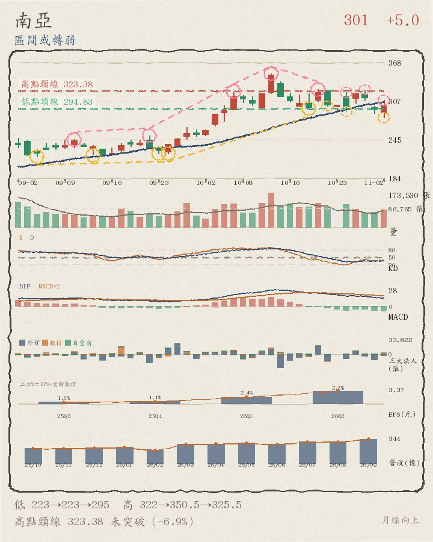
12:31 盤中 309.5（+7.09%），比加權指數強 4.61 個百分點、站上月線 296.25，離高點頸線 323.83 還差 4.4%，轉折還沒走出明顯方向。
- 月線位置：現價 309.5 在月線 296.25 之上（+4.5%）；5 日線 263.4 也在月線之下（短均在下）；月線向下
- 量能：以已過交易時間推估，今天成交量約是 20 日均量的 1.91 倍（爆量），比 20 日均量大不少；上漲又量增，量價配合
- 關鍵價位：高點頸線 323.83 還沒突破，差 4.4%；前一交易日高點 289（高於 7.1%）；今天盤中高點 314（低於 1.4%）；今天盤中低點 289.5（高於 6.9%）
- 轉折結構：低點 223、223、295 與高點 350.5、325.5、325 都沒有明顯遞增，屬於區間震盪或轉弱；還沒確認的轉折低點 10-27 290.5、11-06 224.5；還沒確認的轉折高點 11-02 308、11-10 289（圖上虛線小圈）
聯發科 2454 上市
3915 +85.0（+2.22%）
底部墊高、未過前高 盤中成交值 316.02 億・全榜第 3 名（上市第 3 名）・相對大盤 -0.26
好條件 1/7：底底高
不好條件 4/7：跌破前低、相對大盤弱、在月線之下、月線下彎

12:31 盤中 3915（+2.22%），比加權指數弱 0.26 個百分點、跌破月線 3992.5，離高點頸線 4067.5 還差 3.7%，底部還在墊高（但高點沒同步創高）。
- 月線位置：現價 3915 在月線 3992.5 之下（-1.9%）；5 日線 3624 也在月線之下（短均在下）；月線向下
- 量能：以已過交易時間推估，今天成交量約是 20 日均量的 1.07 倍（量平），比 20 日均量大一些
- 關鍵價位：已跌破前一個轉折低點；高點頸線 4067.5 還在現價上方 3.7%；前一交易日高點 4065（低於 3.7%）；今天盤中高點 3980（低於 1.6%）；今天盤中低點 3780（高於 3.6%）
- 轉折結構：低點 3655、4430、4875 墊高（底底高），但高點 5480、5165、4245 沒有同步創高；還沒確認的轉折低點 10-27 3910、11-06 3115；還沒確認的轉折高點 11-02 4070、11-10 4065（圖上虛線小圈）
欣興 3037 上市
851 +23.0（+2.78%）
底部墊高、未過前高 盤中成交值 213.63 億・全榜第 4 名（上市第 4 名）・相對大盤 +0.30
好條件 2/7：底底高、攻擊量（量增＋上漲）
不好條件 3/7：跌破前低、在月線之下、月線下彎

12:31 盤中 851（+2.78%），比加權指數強 0.30 個百分點、跌破月線 1003.15，離高點頸線 1156.67 還差 26.4%，底部還在墊高（但高點沒同步創高）。
- 月線位置：現價 851 在月線 1003.15 之下（-15.2%）；5 日線 800 也在月線之下（短均在下）；月線向下
- 量能：以已過交易時間推估，今天成交量約是 20 日均量的 1.46 倍（量增），比 20 日均量大不少；上漲又量增，量價配合
- 關鍵價位：已跌破前一個轉折低點；高點頸線 1156.67 還在現價上方 26.4%；前一交易日高點 832（高於 2.3%）；今天盤中高點 864（低於 1.5%）；今天盤中低點 817（高於 4.2%）
- 轉折結構：低點 873、932、1040 墊高（底底高），但高點 1200、1420、1180 沒有同步創高；還沒確認的轉折低點 10-27 1035、11-06 720；還沒確認的轉折高點 11-02 1020、11-10 832（圖上虛線小圈）
台達電 2308 上市
1270 -5.0（-0.39%）
高點墊高、底部不穩 盤中成交值 210.11 億・全榜第 5 名（上市第 5 名）・相對大盤 -2.87
好條件 1/7：頭頭高
不好條件 5/7：跌破前低、今日下跌、相對大盤弱、在月線之下、月線下彎

12:31 盤中 1270（-0.39%），比加權指數弱 2.87 個百分點、跌破月線 1457.75，離高點頸線 1877.5 還差 32.4%，高點還在墊高（但底部沒同步墊高）。
- 月線位置：現價 1270 在月線 1457.75 之下（-12.9%）；5 日線 1168 也在月線之下（短均在下）；月線向下
- 量能：以已過交易時間推估，今天成交量約是 20 日均量的 1.46 倍（量增），比 20 日均量大不少；下跌卻量增，量價背離
- 關鍵價位：已跌破前一個轉折低點；高點頸線 1877.5 還在現價上方 32.4%；前一交易日高點 1275（低於 0.4%）；今天盤中高點 1295（低於 1.9%）；今天盤中低點 1230（高於 3.3%）
- 轉折結構：高點 1885、1965、2115 墊高（頭頭高），但低點 1725、1560、1810 沒有同步墊高；還沒確認的轉折低點 11-02 1255、11-06 1020；還沒確認的轉折高點 10-28 1575、11-10 1275（圖上虛線小圈）
健策 3653 上市
6205 +415.0（+7.17%）
區間或轉弱 盤中成交值 207 億・全榜第 6 名（上市第 6 名）・相對大盤 +4.69
好條件 1/7：攻擊量（量增＋上漲）
不好條件 2/7：在月線之下、月線下彎

12:31 盤中 6205（+7.17%），比加權指數強 4.69 個百分點、跌破月線 6282.75，離高點頸線 6625 還差 6.3%，轉折還沒走出明顯方向。
- 月線位置：現價 6205 在月線 6282.75 之下（-1.2%）；5 日線 5781 也在月線之下（短均在下）；月線向下
- 量能：以已過交易時間推估，今天成交量約是 20 日均量的 2.47 倍（爆量），比 20 日均量大不少；上漲又量增，量價配合
- 關鍵價位：高點頸線 6625 還沒突破，差 6.3%；前一交易日高點 6190（高於 0.2%）；今天盤中高點 6360（低於 2.4%）；今天盤中低點 5825（高於 6.5%）
- 轉折結構：低點 5210、6760、5710 與高點 6985、6655、6595 都沒有明顯遞增，屬於區間震盪或轉弱；還沒確認的轉折低點 11-04 5800、11-09 4970；還沒確認的轉折高點 11-04 6595、11-10 6190（圖上虛線小圈）
台玻 1802 上市
76.7 +6.9（+9.89%）
底部墊高、未過前高 盤中成交值 201.08 億・全榜第 7 名（上市第 7 名）・相對大盤 +7.41
好條件 5/7：站上月線、月線向上、底底高、突破頸線、攻擊量（量增＋上漲）
不好條件 0/7：無

12:31 盤中 76.7（+9.89%），比加權指數強 7.41 個百分點、站上月線 64.88，已突破高點頸線 69.4，底部還在墊高（但高點沒同步創高）。
- 月線位置：現價 76.7 在月線 64.88 之上（+18.2%）；5 日線 63.58 也在月線之下（短均在下）；月線向上
- 量能：以已過交易時間推估，今天成交量約是 20 日均量的 2.36 倍（爆量），比 20 日均量大不少；上漲又量增，量價配合
- 關鍵價位：高點頸線 69.4 已站上；前一交易日高點 69.8（高於 9.9%）；今天盤中高點 76.7（高於 0.0%）；今天盤中低點 70.2（高於 9.3%）
- 轉折結構：低點 56、56.6、58.8 墊高（底底高），但高點 61.7、73.6、70 沒有同步創高；還沒確認的轉折低點 10-30 58.8、11-06 54.1；還沒確認的轉折高點 11-03 70、11-10 69.8（圖上虛線小圈）
富喬 1815 上櫃
140.5 +12.5（+9.77%）
底部墊高、未過前高 盤中成交值 168.99 億・全榜第 8 名（上櫃第 1 名）・相對大盤 +7.29
好條件 3/7：站上月線、底底高、攻擊量（量增＋上漲）
不好條件 1/7：月線下彎
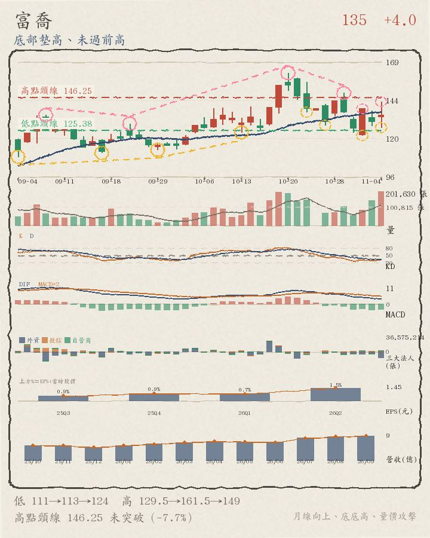
12:31 盤中 140.5（+9.77%），比加權指數強 7.29 個百分點、站上月線 135.2，離高點頸線 144.33 還差 2.7%，底部還在墊高（但高點沒同步創高）。
- 月線位置：現價 140.5 在月線 135.2 之上（+3.9%）；5 日線 126.2 也在月線之下（短均在下）；月線向下
- 量能：以已過交易時間推估，今天成交量約是 20 日均量的 1.36 倍（量增），比 20 日均量大不少；上漲又量增，量價配合
- 關鍵價位：高點頸線 144.33 還沒突破，差 2.7%；前一交易日高點 140.5（高於 0.0%）；今天盤中高點 140.5（高於 0.0%）；今天盤中低點 131（高於 7.3%）
- 轉折結構：低點 111、113、124 墊高（底底高），但高點 161.5、149、143.5 沒有同步創高；還沒確認的轉折低點 11-02 122、11-06 109.5；還沒確認的轉折高點 11-04 143.5、11-10 140.5（圖上虛線小圈）
創意 3443 上市
7885 +715.0（+9.97%）
區間或轉弱 盤中成交值 164.88 億・全榜第 9 名（上市第 8 名）・相對大盤 +7.49
好條件 2/7：站上月線、攻擊量（量增＋上漲）
不好條件 1/7：月線下彎
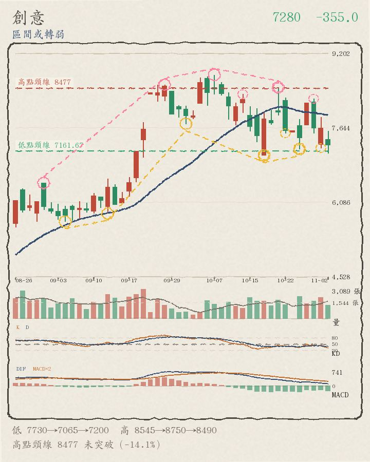
12:31 盤中 7885（+9.97%），比加權指數強 7.49 個百分點、站上月線 7439.5，離高點頸線 8510 還差 7.3%，轉折還沒走出明顯方向。
- 月線位置：現價 7885 在月線 7439.5 之上（+6.0%）；5 日線 6720 也在月線之下（短均在下）；月線向下
- 量能：以已過交易時間推估，今天成交量約是 20 日均量的 1.20 倍（量增），比 20 日均量大不少；上漲又量增，量價配合
- 關鍵價位：高點頸線 8510 還沒突破，差 7.3%；前一交易日高點 7375（高於 6.9%）；今天盤中高點 7885（高於 0.0%）；今天盤中低點 7260（高於 8.6%）
- 轉折結構：低點 7730、7065、7200 與高點 8750、8490、8255 都沒有明顯遞增，屬於區間震盪或轉弱；還沒確認的轉折低點 11-04 6390、11-06 5765；還沒確認的轉折高點 10-29 8255、11-10 7375（圖上虛線小圈）
南亞科 2408 上市
390 +7.0（+1.83%）
區間或轉弱 盤中成交值 158.08 億・全榜第 10 名（上市第 9 名）・相對大盤 -0.65
好條件 1/7：守住今日高檔（距今日高點 1% 內）
不好條件 4/7：跌破前低、相對大盤弱、在月線之下、月線下彎

12:31 盤中 390（+1.83%），比加權指數弱 0.65 個百分點、跌破月線 427.55，離高點頸線 536.67 還差 27.3%，轉折還沒走出明顯方向。
- 月線位置：現價 390 在月線 427.55 之下（-8.8%）；5 日線 371.2 也在月線之下（短均在下）；月線向下
- 量能：以已過交易時間推估，今天成交量約是 20 日均量的 1.06 倍（量平），比 20 日均量大一些
- 關鍵價位：已跌破前一個轉折低點；高點頸線 536.67 還在現價上方 27.3%；前一交易日高點 402（低於 3.0%）；今天盤中高點 393（低於 0.8%）；今天盤中低點 373.5（高於 4.4%）
- 轉折結構：低點 465.5、488、412 與高點 533、537、497.5 都沒有明顯遞增，屬於區間震盪或轉弱；還沒確認的轉折低點 11-06 324；還沒確認的轉折高點 10-29 497.5、11-10 402（圖上虛線小圈）
國巨* 2327 上市
418 +1.5（+0.36%）
區間或轉弱 盤中成交值 146.03 億・全榜第 11 名（上市第 10 名）・相對大盤 -2.12
好條件 1/7：攻擊量（量增＋上漲）
不好條件 4/7：跌破前低、相對大盤弱、在月線之下、月線下彎

12:31 盤中 418（+0.36%），比加權指數弱 2.12 個百分點、跌破月線 504.925，離高點頸線 605.33 還差 30.9%，轉折還沒走出明顯方向。
- 月線位置：現價 418 在月線 504.925 之下（-17.2%）；5 日線 411 也在月線之下（短均在下）；月線向下
- 量能：以已過交易時間推估，今天成交量約是 20 日均量的 1.13 倍（量增），比 20 日均量大一些；上漲又量增，量價配合
- 關鍵價位：已跌破前一個轉折低點；高點頸線 605.33 還在現價上方 30.9%；前一交易日高點 442（低於 5.4%）；今天盤中高點 435.5（低於 4.0%）；今天盤中低點 411.5（高於 1.6%）
- 轉折結構：低點 548、548、506 與高點 605、601、686 都沒有明顯遞增，屬於區間震盪或轉弱；還沒確認的轉折低點 10-27 507、11-06 364.5；還沒確認的轉折高點 10-28 550、11-10 442（圖上虛線小圈）
穩懋 3105 上櫃
512 +27.5（+5.68%）
區間或轉弱 盤中成交值 144.02 億・全榜第 12 名（上櫃第 2 名）・相對大盤 +3.20
好條件 3/7：站上月線、突破頸線、攻擊量（量增＋上漲）
不好條件 1/7：月線下彎

12:31 盤中 512（+5.68%），比加權指數強 3.20 個百分點、站上月線 508.35，已突破高點頸線 487，轉折還沒走出明顯方向。
- 月線位置：現價 512 在月線 508.35 之上（+0.7%）；5 日線 457.8 也在月線之下（短均在下）；月線向下
- 量能：以已過交易時間推估，今天成交量約是 20 日均量的 1.55 倍（爆量），比 20 日均量大不少；上漲又量增，量價配合
- 關鍵價位：高點頸線 487 已站上；前一交易日高點 491（高於 4.3%）；今天盤中高點 525（低於 2.5%）；今天盤中低點 473.5（高於 8.1%）
- 轉折結構：低點 482、454、479 與高點 478、630、596 都沒有明顯遞增，屬於區間震盪或轉弱；還沒確認的轉折低點 10-30 541、11-09 403.5；還沒確認的轉折高點 11-02 596、11-10 491（圖上虛線小圈）
台光電 2383 上市
4485 +120.0（+2.75%）
底部墊高、未過前高 盤中成交值 141.05 億・全榜第 13 名（上市第 11 名）・相對大盤 +0.27
好條件 2/7：底底高、攻擊量（量增＋上漲）
不好條件 3/7：跌破前低、在月線之下、月線下彎

12:31 盤中 4485（+2.75%），比加權指數強 0.27 個百分點、跌破月線 4801，離高點頸線 5390 還差 16.8%，底部還在墊高（但高點沒同步創高）。
- 月線位置：現價 4485 在月線 4801 之下（-6.6%）；5 日線 4182 也在月線之下（短均在下）；月線向下
- 量能：以已過交易時間推估，今天成交量約是 20 日均量的 1.13 倍（量增），比 20 日均量大一些；上漲又量增，量價配合
- 關鍵價位：已跌破前一個轉折低點；高點頸線 5390 還在現價上方 16.8%；前一交易日高點 4475（高於 0.2%）；今天盤中高點 4565（低於 1.8%）；今天盤中低點 4310（高於 4.1%）
- 轉折結構：低點 4635、4855、4930 墊高（底底高），但高點 6325、5485、5295 沒有同步創高；還沒確認的轉折低點 10-27 4685、11-06 3690；還沒確認的轉折高點 11-02 4835、11-10 4475（圖上虛線小圈）
金像電 2368 上市
1055 +72.0（+7.32%）
區間或轉弱 盤中成交值 130.48 億・全榜第 14 名（上市第 12 名）・相對大盤 +4.84
好條件 1/7：攻擊量（量增＋上漲）
不好條件 3/7：跌破前低、在月線之下、月線下彎

12:31 盤中 1055（+7.32%），比加權指數強 4.84 個百分點、跌破月線 1083.85，離高點頸線 1082.5 還差 2.5%，轉折還沒走出明顯方向。
- 月線位置：現價 1055 在月線 1083.85 之下（-2.7%）；5 日線 904.4 也在月線之下（短均在下）；月線向下
- 量能：以已過交易時間推估，今天成交量約是 20 日均量的 1.49 倍（量增），比 20 日均量大不少；上漲又量增，量價配合
- 關鍵價位：已跌破前一個轉折低點；高點頸線 1082.5 還在現價上方 2.5%；前一交易日高點 983（高於 7.3%）；今天盤中高點 1080（低於 2.3%）；今天盤中低點 1000（高於 5.5%）
- 轉折結構：低點 1030、950、1120 與高點 1310、1295、1190 都沒有明顯遞增，屬於區間震盪或轉弱；還沒確認的轉折低點 10-27 1055、11-06 782；還沒確認的轉折高點 11-02 1080、11-10 983（圖上虛線小圈）
世芯-KY 3661 上市
3575 +155.0（+4.53%）
區間或轉弱 盤中成交值 114.79 億・全榜第 15 名（上市第 13 名）・相對大盤 +2.05
好條件 2/7：站上月線、攻擊量（量增＋上漲）
不好條件 1/7：月線下彎
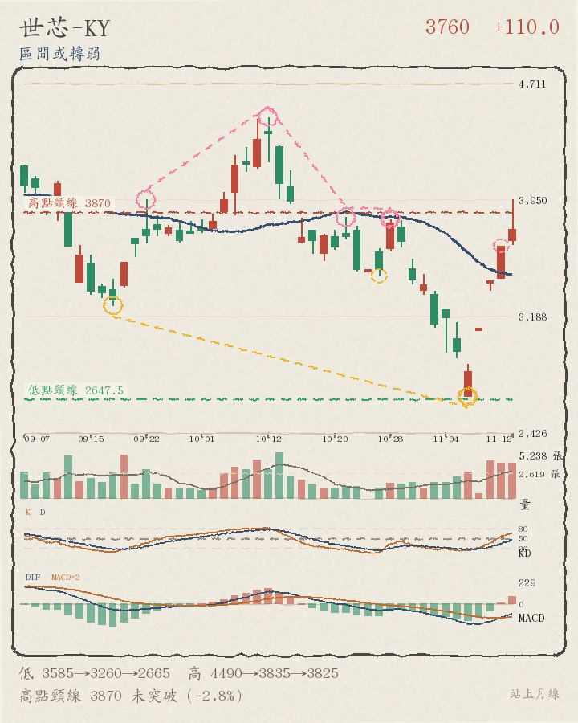
12:31 盤中 3575（+4.53%），比加權指數強 2.05 個百分點、站上月線 3493.75，離高點頸線 3870 還差 7.6%，轉折還沒走出明顯方向。
- 月線位置：現價 3575 在月線 3493.75 之上（+2.3%）；5 日線 3100 也在月線之下（短均在下）；月線向下
- 量能：以已過交易時間推估，今天成交量約是 20 日均量的 2.15 倍（爆量），比 20 日均量大不少；上漲又量增，量價配合
- 關鍵價位：高點頸線 3870 還沒突破，差 7.6%；前一交易日高點 3420（高於 4.5%）；今天盤中高點 3615（低於 1.1%）；今天盤中低點 3440（高於 3.9%）
- 轉折結構：低點 2630、3585、3260 與高點 4490、3835、3825 都沒有明顯遞增，屬於區間震盪或轉弱；還沒確認的轉折低點 10-27 3455、11-06 2665；還沒確認的轉折高點 10-28 3825、11-10 3420（圖上虛線小圈）
臻鼎-KY 4958 上市
455.5 +25.0（+5.81%）
底部墊高、未過前高 盤中成交值 113.21 億・全榜第 16 名（上市第 14 名）・相對大盤 +3.33
好條件 2/7：底底高、攻擊量（量增＋上漲）
不好條件 3/7：跌破前低、在月線之下、月線下彎
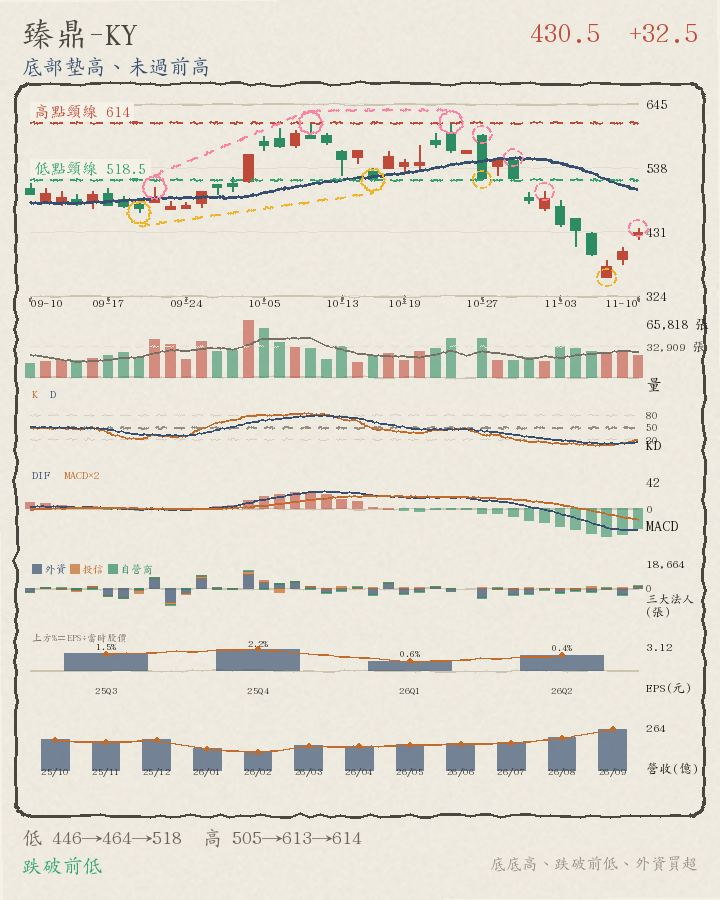
12:31 盤中 455.5（+5.81%），比加權指數強 3.33 個百分點、跌破月線 501.775，離高點頸線 607 還差 25.0%，底部還在墊高（但高點沒同步創高）。
- 月線位置：現價 455.5 在月線 501.775 之下（-9.2%）；5 日線 405.7 也在月線之下（短均在下）；月線向下
- 量能：以已過交易時間推估，今天成交量約是 20 日均量的 1.15 倍（量增），比 20 日均量大不少；上漲又量增，量價配合
- 關鍵價位：已跌破前一個轉折低點；高點頸線 607 還在現價上方 25.0%；前一交易日高點 437.5（高於 4.1%）；今天盤中高點 463（低於 1.6%）；今天盤中低點 442（高於 3.1%）
- 轉折結構：低點 446.5、463.5、518 墊高（底底高），但高點 505、613、614 沒有同步創高；還沒確認的轉折低點 10-27 519、11-06 355；還沒確認的轉折高點 11-02 499、11-10 437.5（圖上虛線小圈）
精材 3374 上櫃
466.5 +42.0（+9.89%）
區間或轉弱 盤中成交值 109.77 億・全榜第 17 名（上櫃第 3 名）・相對大盤 +7.41
好條件 2/7：站上月線、攻擊量（量增＋上漲）
不好條件 1/7：月線下彎
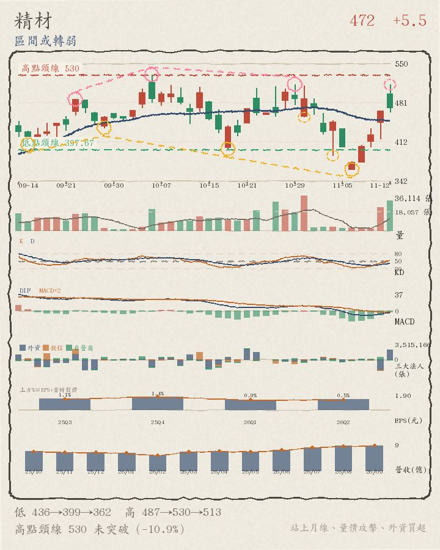
12:31 盤中 466.5（+9.89%），比加權指數強 7.41 個百分點、站上月線 450.375，離高點頸線 501.25 還差 6.9%，轉折還沒走出明顯方向。
- 月線位置：現價 466.5 在月線 450.375 之上（+3.6%）；5 日線 410.6 也在月線之下（短均在下）；月線向下
- 量能：以已過交易時間推估，今天成交量約是 20 日均量的 2.44 倍（爆量），比 20 日均量大不少；上漲又量增，量價配合
- 關鍵價位：高點頸線 501.25 還沒突破，差 6.9%；前一交易日高點 435（高於 7.2%）；今天盤中高點 466.5（高於 0.0%）；今天盤中低點 416.5（高於 12.0%）
- 轉折結構：低點 407、436.5、399 與高點 487、530、513 都沒有明顯遞增，屬於區間震盪或轉弱；還沒確認的轉折低點 11-04 387、11-06 362.5；還沒確認的轉折高點 10-29 513、11-10 435（圖上虛線小圈）
南電 8046 上市
1030 +25.0（+2.49%）
底部墊高、未過前高 盤中成交值 108.78 億・全榜第 18 名（上市第 15 名）・相對大盤 +0.01
好條件 2/7：底底高、攻擊量（量增＋上漲）
不好條件 3/7：跌破前低、在月線之下、月線下彎
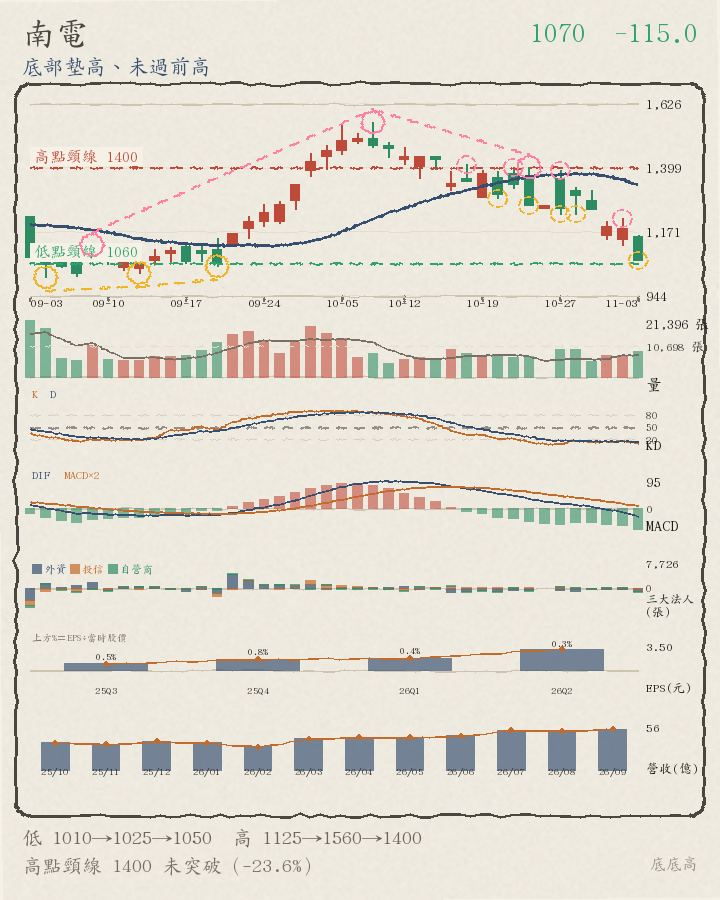
12:31 盤中 1030（+2.49%），比加權指數強 0.01 個百分點、跌破月線 1212，離高點頸線 1395 還差 26.2%，底部還在墊高（但高點沒同步創高）。
- 月線位置：現價 1030 在月線 1212 之下（-15.0%）；5 日線 973 也在月線之下（短均在下）；月線向下
- 量能：以已過交易時間推估，今天成交量約是 20 日均量的 1.48 倍（量增），比 20 日均量大不少；上漲又量增，量價配合
- 關鍵價位：已跌破前一個轉折低點；高點頸線 1395 還在現價上方 26.2%；前一交易日高點 1025（高於 0.5%）；今天盤中高點 1050（低於 1.9%）；今天盤中低點 986（高於 4.5%）
- 轉折結構：低點 1010、1025、1050 墊高（底底高），但高點 1125、1560、1400 沒有同步創高；還沒確認的轉折低點 10-28 1235、11-09 867；還沒確認的轉折高點 11-02 1220、11-10 1025（圖上虛線小圈）
台燿 6274 上櫃
1045 +63.0（+6.42%）
區間或轉弱 盤中成交值 107.64 億・全榜第 19 名（上櫃第 4 名）・相對大盤 +3.94
好條件 1/7：攻擊量（量增＋上漲）
不好條件 3/7：跌破前低、在月線之下、月線下彎

12:31 盤中 1045（+6.42%），比加權指數強 3.94 個百分點、跌破月線 1336.5，離高點頸線 1447.5 還差 27.8%，轉折還沒走出明顯方向。
- 月線位置：現價 1045 在月線 1336.5 之下（-21.8%）；5 日線 994 也在月線之下（短均在下）；月線向下
- 量能：以已過交易時間推估，今天成交量約是 20 日均量的 1.10 倍（量增），比 20 日均量大一些；上漲又量增，量價配合
- 關鍵價位：已跌破前一個轉折低點；高點頸線 1447.5 還在現價上方 27.8%；前一交易日高點 1050（低於 0.5%）；今天盤中高點 1070（低於 2.3%）；今天盤中低點 992（高於 5.3%）
- 轉折結構：低點 1395、1295、1275 與高點 1460、1835、1450 都沒有明顯遞增，屬於區間震盪或轉弱；還沒確認的轉折低點 10-27 1280、11-09 897；還沒確認的轉折高點 10-29 1450、11-10 1050（圖上虛線小圈）
華新科 2492 上市
285.5 -3.0（-1.04%）
區間或轉弱 盤中成交值 106.31 億・全榜第 20 名（上市第 16 名）・相對大盤 -3.52
好條件 0/7：無
不好條件 5/7：跌破前低、今日下跌、相對大盤弱、在月線之下、月線下彎

12:31 盤中 285.5（-1.04%），比加權指數弱 3.52 個百分點、跌破月線 358.425，離高點頸線 428.33 還差 33.3%，轉折還沒走出明顯方向。
- 月線位置：現價 285.5 在月線 358.425 之下（-20.4%）；5 日線 284.9 也在月線之下（短均在下）；月線向下
- 量能：以已過交易時間推估，今天成交量約是 20 日均量的 1.95 倍（爆量），比 20 日均量大不少；下跌卻量增，量價背離
- 關鍵價位：已跌破前一個轉折低點；高點頸線 428.33 還在現價上方 33.3%；前一交易日高點 306.5（低於 6.9%）；今天盤中高點 307（低於 7.0%）；今天盤中低點 277（高於 3.1%）
- 轉折結構：低點 298.5、376.5、355.5 與高點 431.5、422、431.5 都沒有明顯遞增，屬於區間震盪或轉弱；還沒確認的轉折低點 11-06 253.5；還沒確認的轉折高點 10-29 431.5、11-10 306.5（圖上虛線小圈）
禾伸堂 3026 上市
549 +39.0（+7.65%）
區間或轉弱 盤中成交值 97.93 億・全榜第 21 名（上市第 17 名）・相對大盤 +5.17
好條件 1/7：攻擊量（量增＋上漲）
不好條件 3/7：跌破前低、在月線之下、月線下彎
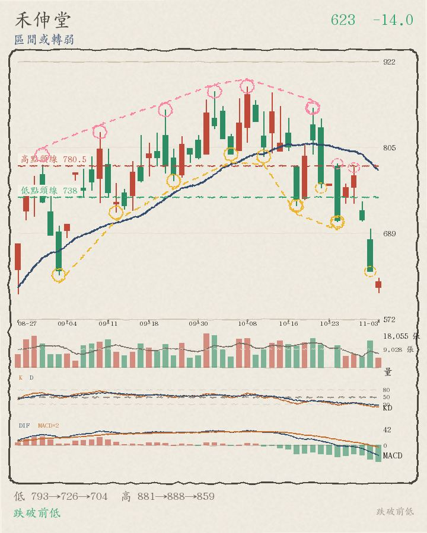
12:31 盤中 549（+7.65%），比加權指數強 5.17 個百分點、跌破月線 693.675，離高點頸線 780.5 還差 29.7%，轉折還沒走出明顯方向。
- 月線位置：現價 549 在月線 693.675 之下（-20.9%）；5 日線 519.7 也在月線之下（短均在下）；月線向下
- 量能：以已過交易時間推估，今天成交量約是 20 日均量的 2.10 倍（爆量），比 20 日均量大不少；上漲又量增，量價配合
- 關鍵價位：已跌破前一個轉折低點；高點頸線 780.5 還在現價上方 29.7%；前一交易日高點 544（高於 0.9%）；今天盤中高點 561（低於 2.1%）；今天盤中低點 520（高於 5.6%）
- 轉折結構：低點 793、726、704 與高點 881、888、859 都沒有明顯遞增，屬於區間震盪或轉弱；還沒確認的轉折低點 11-04 526、11-06 475.5；還沒確認的轉折高點 10-29 778、11-10 544（圖上虛線小圈）
奇鋐 3017 上市
2970 +180.0（+6.45%）
區間或轉弱 盤中成交值 91.59 億・全榜第 22 名（上市第 18 名）・相對大盤 +3.97
好條件 1/7：攻擊量（量增＋上漲）
不好條件 3/7：跌破前低、在月線之下、月線下彎

12:31 盤中 2970（+6.45%），比加權指數強 3.97 個百分點、跌破月線 3036.5，離高點頸線 3390 還差 12.4%，轉折還沒走出明顯方向。
- 月線位置：現價 2970 在月線 3036.5 之下（-2.2%）；5 日線 2605 也在月線之下（短均在下）；月線向下
- 量能：以已過交易時間推估，今天成交量約是 20 日均量的 1.39 倍（量增），比 20 日均量大不少；上漲又量增，量價配合
- 關鍵價位：已跌破前一個轉折低點；高點頸線 3390 還在現價上方 12.4%；前一交易日高點 2790（高於 6.5%）；今天盤中高點 3010（低於 1.3%）；今天盤中低點 2815（高於 5.5%）
- 轉折結構：低點 3100、3285、3050 與高點 3600、3700、3450 都沒有明顯遞增，屬於區間震盪或轉弱；還沒確認的轉折低點 11-06 2310、11-09 2310；還沒確認的轉折高點 11-03 3115、11-10 2790（圖上虛線小圈）
日月光投控 3711 上市
610 +5.0（+0.83%）
區間或轉弱 盤中成交值 89.66 億・全榜第 23 名（上市第 19 名）・相對大盤 -1.65
好條件 0/7：無
不好條件 4/7：跌破前低、相對大盤弱、在月線之下、月線下彎
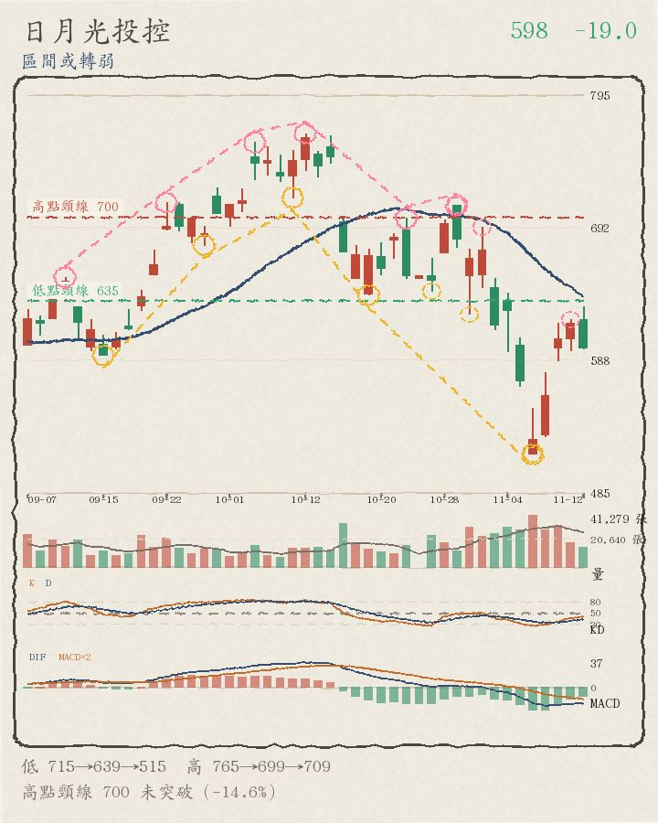
12:31 盤中 610（+0.83%），比加權指數弱 1.65 個百分點、跌破月線 651.6，離高點頸線 700 還差 12.9%，轉折還沒走出明顯方向。
- 月線位置：現價 610 在月線 651.6 之下（-6.4%）；5 日線 578.4 也在月線之下（短均在下）；月線向下
- 量能：以已過交易時間推估，今天成交量約是 20 日均量的 0.85 倍（量平），比 20 日均量少一些；上漲但量縮，量價背離
- 關鍵價位：已跌破前一個轉折低點；高點頸線 700 還在現價上方 12.9%；前一交易日高點 617（低於 1.1%）；今天盤中高點 620（低於 1.6%）；今天盤中低點 596（高於 2.3%）
- 轉折結構：低點 678、715、639 與高點 765、699、709 都沒有明顯遞增，屬於區間震盪或轉弱；還沒確認的轉折低點 10-30 624、11-06 515；還沒確認的轉折高點 11-02 692、11-10 617（圖上虛線小圈）
聯電 2303 上市
103 +2.5（+2.49%）
底部墊高、未過前高 盤中成交值 70.84 億・全榜第 24 名（上市第 20 名）・相對大盤 +0.01
好條件 2/7：底底高、守住今日高檔（距今日高點 1% 內）
不好條件 3/7：跌破前低、在月線之下、月線下彎
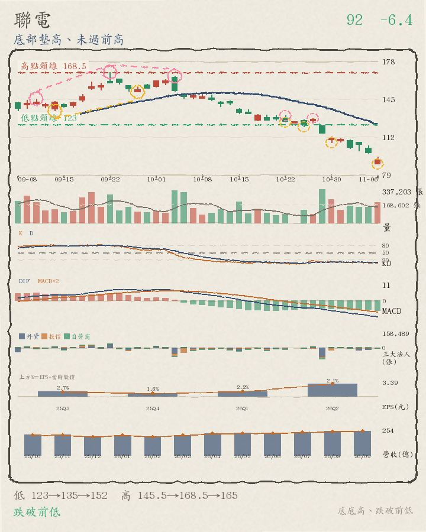
12:31 盤中 103（+2.49%），比加權指數強 0.01 個百分點、跌破月線 118.555，離高點頸線 166.75 還差 38.2%，底部還在墊高（但高點沒同步創高）。
- 月線位置：現價 103 在月線 118.555 之下（-13.1%）；5 日線 98.62 也在月線之下（短均在下）；月線向下
- 量能：以已過交易時間推估，今天成交量約是 20 日均量的 0.59 倍（量縮），比 20 日均量少很多；上漲但量縮，量價背離
- 關鍵價位：已跌破前一個轉折低點；高點頸線 166.75 還在現價上方 38.2%；前一交易日高點 103.5（低於 0.5%）；今天盤中高點 103.5（低於 0.5%）；今天盤中低點 98.6（高於 4.5%）
- 轉折結構：低點 123、135、151.5 墊高（底底高），但高點 145.5、168.5、165 沒有同步創高；還沒確認的轉折低點 10-30 107、11-06 88.6；還沒確認的轉折高點 10-28 128.5、11-10 103.5（圖上虛線小圈）
華邦電 2344 上市
133.5 -1.5（-1.11%）
區間或轉弱 盤中成交值 70.81 億・全榜第 25 名（上市第 21 名）・相對大盤 -3.59
好條件 1/7：守住今日高檔（距今日高點 1% 內）
不好條件 5/7：跌破前低、今日下跌、相對大盤弱、在月線之下、月線下彎
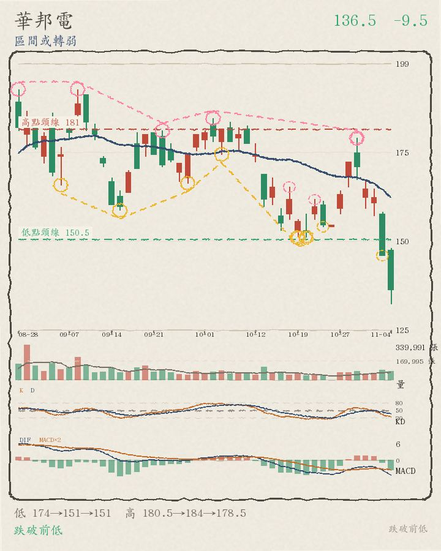
12:31 盤中 133.5（-1.11%），比加權指數弱 3.59 個百分點、跌破月線 152.725，離高點頸線 181 還差 26.2%，轉折還沒走出明顯方向。
- 月線位置：現價 133.5 在月線 152.725 之下（-12.6%）；5 日線 131.4 也在月線之下（短均在下）；月線向下
- 量能：以已過交易時間推估，今天成交量約是 20 日均量的 1.03 倍（量平），跟 20 日均量差不多
- 關鍵價位：已跌破前一個轉折低點；高點頸線 181 還在現價上方 26.2%；前一交易日高點 142（低於 6.0%）；今天盤中高點 134（低於 0.4%）；今天盤中低點 127（高於 5.1%）
- 轉折結構：低點 174、151、151 與高點 180.5、184、178.5 都沒有明顯遞增，屬於區間震盪或轉弱；還沒確認的轉折低點 11-06 115；還沒確認的轉折高點 10-29 178.5、11-10 142（圖上虛線小圈）
景碩 3189 上市
717 -28.0（-3.76%）
底部墊高、未過前高 盤中成交值 70.29 億・全榜第 26 名（上市第 22 名）・相對大盤 -6.24
好條件 1/7：底底高
不好條件 5/7：跌破前低、今日下跌、相對大盤弱、在月線之下、月線下彎
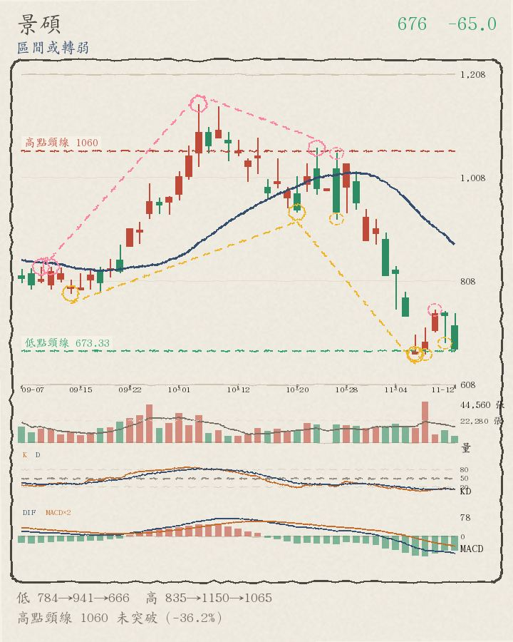
12:31 盤中 717（-3.76%），比加權指數弱 6.24 個百分點、跌破月線 912.1，離高點頸線 1060 還差 32.4%，底部還在墊高（但高點沒同步創高）。
- 月線位置：現價 717 在月線 912.1 之下（-21.4%）；5 日線 733.6 也在月線之下（短均在下）；月線向下
- 量能：以已過交易時間推估，今天成交量約是 20 日均量的 0.74 倍（量平），比 20 日均量少很多
- 關鍵價位：已跌破前一個轉折低點；高點頸線 1060 還在現價上方 32.4%；前一交易日高點 752（低於 4.7%）；今天盤中高點 750（低於 4.4%）；今天盤中低點 688（高於 4.2%）
- 轉折結構：低點 766、784、941 墊高（底底高），但高點 835、1150、1065 沒有同步創高；還沒確認的轉折低點 11-06 666、11-09 666；還沒確認的轉折高點 10-27 1055、11-10 752（圖上虛線小圈）
大立光 3008 上市
5250 +185.0（+3.65%）
區間或轉弱 盤中成交值 67.94 億・全榜第 27 名（上市第 23 名）・相對大盤 +1.17
好條件 1/7：守住今日高檔（距今日高點 1% 內）
不好條件 3/7：跌破前低、在月線之下、月線下彎

12:31 盤中 5250（+3.65%），比加權指數強 1.17 個百分點、跌破月線 5796，轉折還沒走出明顯方向。
- 月線位置：現價 5250 在月線 5796 之下（-9.4%）；5 日線 4801 也在月線之下（短均在下）；月線向下
- 量能：以已過交易時間推估，今天成交量約是 20 日均量的 0.57 倍（量縮），比 20 日均量少很多；上漲但量縮，量價背離
- 關鍵價位：前一交易日高點 5290（低於 0.8%）；今天盤中高點 5265（低於 0.3%）；今天盤中低點 5035（高於 4.3%）
- 轉折結構：低點 5740、6355、5970 與高點 6750、7460、6370 都沒有明顯遞增，屬於區間震盪或轉弱；還沒確認的轉折低點 10-27 5960、11-06 4075；還沒確認的轉折高點 10-28 6370、11-10 5290（圖上虛線小圈）
玉晶光 3406 上市
995 +90.0（+9.94%）
區間或轉弱 盤中成交值 67.28 億・全榜第 28 名（上市第 24 名）・相對大盤 +7.46
好條件 0/7：無
不好條件 3/7：跌破前低、在月線之下、月線下彎

12:31 盤中 995（+9.94%），比加權指數強 7.46 個百分點、跌破月線 1056.85，離高點頸線 1330 還差 25.2%，轉折還沒走出明顯方向。
- 月線位置：現價 995 在月線 1056.85 之下（-5.8%）；5 日線 871.2 也在月線之下（短均在下）；月線向下
- 量能：以已過交易時間推估，今天成交量約是 20 日均量的 1.03 倍（量平），跟 20 日均量差不多
- 關鍵價位：已跌破前一個轉折低點；高點頸線 1330 還在現價上方 25.2%；前一交易日高點 925（高於 7.6%）；今天盤中高點 995（高於 0.0%）；今天盤中低點 906（高於 9.8%）
- 轉折結構：低點 869、1010、1005 與高點 1220、1330、1330 都沒有明顯遞增，屬於區間震盪或轉弱；還沒確認的轉折低點 11-06 762；還沒確認的轉折高點 10-29 1330、11-10 925（圖上虛線小圈）
聯亞 3081 上櫃
2165 +50.0（+2.36%）
區間或轉弱 盤中成交值 66.73 億・全榜第 29 名（上櫃第 5 名）・相對大盤 -0.12
好條件 2/7：攻擊量（量增＋上漲）、守住今日高檔（距今日高點 1% 內）
不好條件 4/7：跌破前低、相對大盤弱、在月線之下、月線下彎

12:31 盤中 2165（+2.36%），比加權指數弱 0.12 個百分點、跌破月線 2381，離高點頸線 2940 還差 26.4%，轉折還沒走出明顯方向。
- 月線位置：現價 2165 在月線 2381 之下（-9.1%）；5 日線 1956 也在月線之下（短均在下）；月線向下
- 量能：以已過交易時間推估，今天成交量約是 20 日均量的 1.19 倍（量增），比 20 日均量大不少；上漲又量增，量價配合
- 關鍵價位：已跌破前一個轉折低點；高點頸線 2940 還在現價上方 26.4%；前一交易日高點 2115（高於 2.4%）；今天盤中高點 2185（低於 0.9%）；今天盤中低點 2115（高於 2.4%）
- 轉折結構：低點 2650、2585、2365 與高點 2950、3210、2795 都沒有明顯遞增，屬於區間震盪或轉弱；還沒確認的轉折低點 11-06 1705；還沒確認的轉折高點 11-02 2465、11-10 2115（圖上虛線小圈）
大量 3167 上市
881 +80.0（+9.99%）
區間或轉弱 盤中成交值 65.39 億・全榜第 30 名（上市第 25 名）・相對大盤 +7.51
好條件 2/7：突破頸線、攻擊量（量增＋上漲）
不好條件 3/7：跌破前低、在月線之下、月線下彎

12:31 盤中 881（+9.99%），比加權指數強 7.51 個百分點、跌破月線 912.55，已突破高點頸線 825.5，轉折還沒走出明顯方向。
- 月線位置：現價 881 在月線 912.55 之下（-3.5%）；5 日線 776 也在月線之下（短均在下）；月線向下
- 量能：以已過交易時間推估，今天成交量約是 20 日均量的 2.29 倍（爆量），比 20 日均量大不少；上漲又量增，量價配合
- 關鍵價位：高點頸線 825.5 已站上；前一交易日高點 812（高於 8.5%）；今天盤中高點 881（高於 0.0%）；今天盤中低點 808（高於 9.0%）
- 轉折結構：低點 781、951、884 與高點 1090、1030、1030 都沒有明顯遞增，屬於區間震盪或轉弱；還沒確認的轉折低點 11-06 700、11-09 700；還沒確認的轉折高點 10-29 1030、11-10 812（圖上虛線小圈）
旺矽 6223 上櫃
4480 +405.0（+9.94%）
區間或轉弱 盤中成交值 65.32 億・全榜第 31 名（上櫃第 6 名）・相對大盤 +7.46
好條件 1/7：攻擊量（量增＋上漲）
不好條件 3/7：跌破前低、在月線之下、月線下彎

12:31 盤中 4480（+9.94%），比加權指數強 7.46 個百分點、跌破月線 4726.75，離高點頸線 6026.67 還差 25.7%，轉折還沒走出明顯方向。
- 月線位置：現價 4480 在月線 4726.75 之下（-5.2%）；5 日線 3817 也在月線之下（短均在下）；月線向下
- 量能：以已過交易時間推估，今天成交量約是 20 日均量的 1.86 倍（爆量），比 20 日均量大不少；上漲又量增，量價配合
- 關鍵價位：已跌破前一個轉折低點；高點頸線 6026.67 還在現價上方 25.7%；前一交易日高點 4075（高於 9.9%）；今天盤中高點 4480（高於 0.0%）；今天盤中低點 4100（高於 9.3%）
- 轉折結構：低點 5365、5090、4995 與高點 5860、6160、5150 都沒有明顯遞增，屬於區間震盪或轉弱；還沒確認的轉折低點 10-30 4390、11-06 3355；還沒確認的轉折高點 11-02 4790、11-10 4075（圖上虛線小圈）
金居 8358 上櫃
376.5 +10.5（+2.87%）
區間或轉弱 盤中成交值 56.48 億・全榜第 32 名（上櫃第 7 名）・相對大盤 +0.39
好條件 1/7：攻擊量（量增＋上漲）
不好條件 3/7：跌破前低、在月線之下、月線下彎
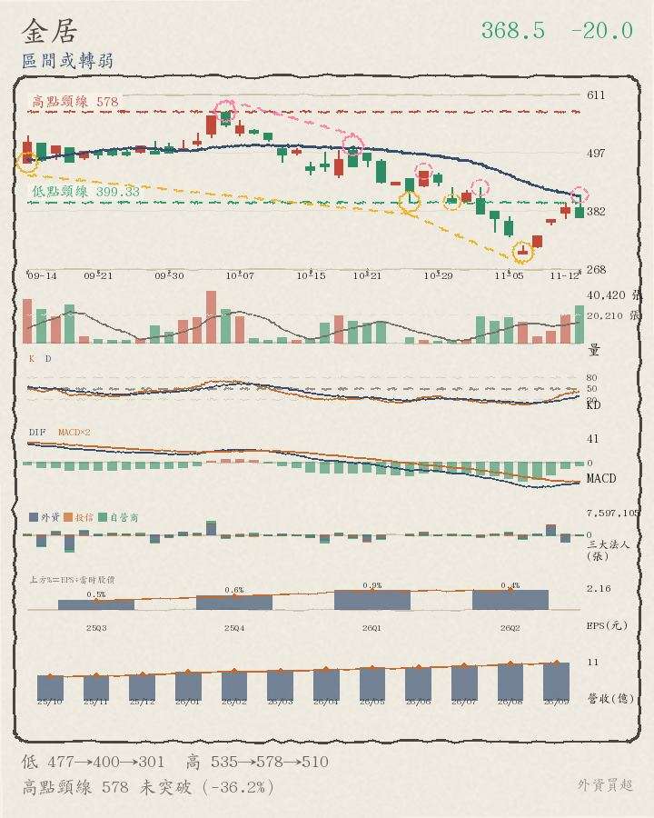
12:31 盤中 376.5（+2.87%），比加權指數強 0.39 個百分點、跌破月線 423.05，轉折還沒走出明顯方向。
- 月線位置：現價 376.5 在月線 423.05 之下（-11.0%）；5 日線 340.5 也在月線之下（短均在下）；月線向下
- 量能：以已過交易時間推估，今天成交量約是 20 日均量的 1.98 倍（爆量），比 20 日均量大不少；上漲又量增，量價配合
- 關鍵價位：前一交易日高點 366（高於 2.9%）；今天盤中高點 388（低於 3.0%）；今天盤中低點 367（高於 2.6%）
- 轉折結構：低點 469.5、477、399.5 與高點 535、578、510 都沒有明顯遞增，屬於區間震盪或轉弱；還沒確認的轉折低點 10-30 399.5、11-06 301；還沒確認的轉折高點 11-03 428、11-10 366（圖上虛線小圈）
智邦 2345 上市
1555 +10.0（+0.65%）
區間或轉弱 盤中成交值 56.38 億・全榜第 33 名（上市第 26 名）・相對大盤 -1.83
好條件 2/7：攻擊量（量增＋上漲）、守住今日高檔（距今日高點 1% 內）
不好條件 4/7：跌破前低、相對大盤弱、在月線之下、月線下彎
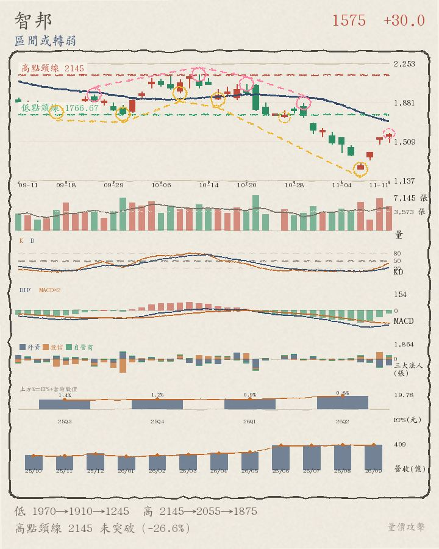
12:31 盤中 1555（+0.65%），比加權指數弱 1.83 個百分點、跌破月線 1725.25，轉折還沒走出明顯方向。
- 月線位置：現價 1555 在月線 1725.25 之下（-9.9%）；5 日線 1418 也在月線之下（短均在下）；月線向下
- 量能：以已過交易時間推估，今天成交量約是 20 日均量的 1.12 倍（量增），比 20 日均量大一些；上漲又量增，量價配合
- 關鍵價位：前一交易日高點 1545（高於 0.6%）；今天盤中高點 1565（低於 0.6%）；今天盤中低點 1500（高於 3.7%）
- 轉折結構：低點 1770、1970、1910 與高點 2145、2055、1875 都沒有明顯遞增，屬於區間震盪或轉弱；還沒確認的轉折低點 10-27 1740、11-06 1245；還沒確認的轉折高點 10-29 1875、11-10 1545（圖上虛線小圈）
環球晶 6488 上櫃
615 +3.0（+0.49%）
區間或轉弱 盤中成交值 53.09 億・全榜第 34 名（上櫃第 8 名）・相對大盤 -1.99
好條件 0/7：無
不好條件 4/7：跌破前低、相對大盤弱、在月線之下、月線下彎

12:31 盤中 615（+0.49%），比加權指數弱 1.99 個百分點、跌破月線 783.3，離高點頸線 1013.33 還差 39.3%，轉折還沒走出明顯方向。
- 月線位置：現價 615 在月線 783.3 之下（-21.5%）；5 日線 574 也在月線之下（短均在下）；月線向下
- 量能：以已過交易時間推估，今天成交量約是 20 日均量的 0.94 倍（量平），比 20 日均量少一些
- 關鍵價位：已跌破前一個轉折低點；高點頸線 1013.33 還在現價上方 39.3%；前一交易日高點 619（低於 0.6%）；今天盤中高點 623（低於 1.3%）；今天盤中低點 603（高於 2.0%）
- 轉折結構：低點 931、875、872 與高點 1015、1010、1260 都沒有明顯遞增，屬於區間震盪或轉弱；還沒確認的轉折低點 10-27 807、11-06 508；還沒確認的轉折高點 10-28 860、11-10 619（圖上虛線小圈）
台表科 6278 上市
233.5 +15.5（+7.11%）
底部墊高、未過前高 盤中成交值 53 億・全榜第 35 名（上市第 27 名）・相對大盤 +4.63
好條件 3/7：底底高、突破頸線、攻擊量（量增＋上漲）
不好條件 3/7：跌破前低、在月線之下、月線下彎
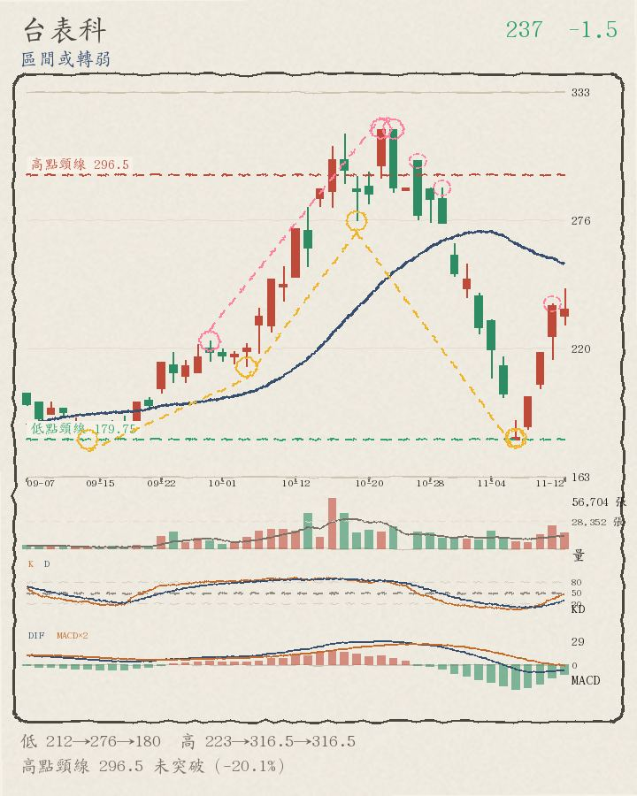
12:31 盤中 233.5（+7.11%），比加權指數強 4.63 個百分點、跌破月線 260.85，已突破高點頸線 220.5，底部還在墊高（但高點沒同步創高）。
- 月線位置：現價 233.5 在月線 260.85 之下（-10.5%）；5 日線 203.1 也在月線之下（短均在下）；月線向下
- 量能：以已過交易時間推估，今天成交量約是 20 日均量的 1.48 倍（量增），比 20 日均量大不少；上漲又量增，量價配合
- 關鍵價位：高點頸線 220.5 已站上；前一交易日高點 218（高於 7.1%）；今天盤中高點 239.5（低於 2.5%）；今天盤中低點 215（高於 8.6%）
- 轉折結構：低點 179.5、211.5、276 墊高（底底高），但高點 223、316.5、316.5 沒有同步創高；還沒確認的轉折低點 11-06 180；還沒確認的轉折高點 10-29 290.5、11-10 218（圖上虛線小圈）
騰輝電子-KY 6672 上市
530 +26.0（+5.16%）
底部墊高、未過前高 盤中成交值 51.58 億・全榜第 36 名（上市第 28 名）・相對大盤 +2.68
好條件 2/7：底底高、攻擊量（量增＋上漲）
不好條件 3/7：跌破前低、在月線之下、月線下彎

12:31 盤中 530（+5.16%），比加權指數強 2.68 個百分點、跌破月線 544.825，離高點頸線 547 還差 3.1%，底部還在墊高（但高點沒同步創高）。
- 月線位置：現價 530 在月線 544.825 之下（-2.7%）；5 日線 493.1 也在月線之下（短均在下）；月線向下
- 量能：以已過交易時間推估，今天成交量約是 20 日均量的 1.73 倍（爆量），比 20 日均量大不少；上漲又量增，量價配合
- 關鍵價位：已跌破前一個轉折低點；高點頸線 547 還在現價上方 3.1%；前一交易日高點 542（低於 2.2%）；今天盤中高點 542（低於 2.2%）；今天盤中低點 498（高於 6.4%）
- 轉折結構：低點 261.5、285、532 墊高（底底高），但高點 605、677、552 沒有同步創高；還沒確認的轉折低點 11-03 493.5、11-06 429；還沒確認的轉折高點 11-04 552、11-10 542（圖上虛線小圈）
力積電 6770 上市
57.3 -1.9（-3.21%）
區間或轉弱 盤中成交值 50.22 億・全榜第 37 名（上市第 29 名）・相對大盤 -5.69
好條件 0/7：無
不好條件 6/7：跌破前低、今日下跌、相對大盤弱、在月線之下、跌破昨日低點、月線下彎
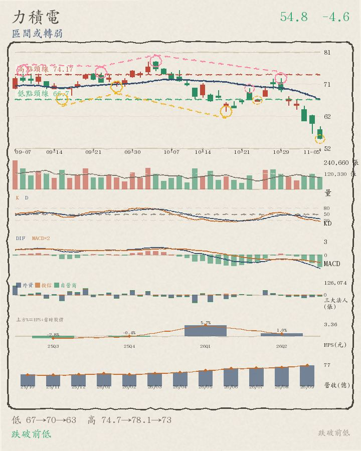
12:31 盤中 57.3（-3.21%），比加權指數弱 5.69 個百分點、跌破月線 64.355，離高點頸線 74.17 還差 22.7%，轉折還沒走出明顯方向。
- 月線位置：現價 57.3 在月線 64.355 之下（-11.0%）；5 日線 56.88 也在月線之下（短均在下）；月線向下
- 量能：以已過交易時間推估，今天成交量約是 20 日均量的 1.05 倍（量平），比 20 日均量大一些
- 關鍵價位：已跌破前一個轉折低點；高點頸線 74.17 還在現價上方 22.7%；前一交易日高點 63（低於 9.0%）；今天盤中高點 58.7（低於 2.4%）；今天盤中低點 55.9（高於 2.5%）
- 轉折結構：低點 66.7、70.5、63 與高點 74.7、78.1、73 都沒有明顯遞增，屬於區間震盪或轉弱；還沒確認的轉折低點 10-23 66.4、11-06 49.35；還沒確認的轉折高點 10-29 73、11-10 63（圖上虛線小圈）
信驊 5274 上櫃
12350 +415.0（+3.48%）
區間或轉弱 盤中成交值 49.65 億・全榜第 38 名（上櫃第 9 名）・相對大盤 +1.00
好條件 1/7：攻擊量（量增＋上漲）
不好條件 3/7：跌破前低、在月線之下、月線下彎
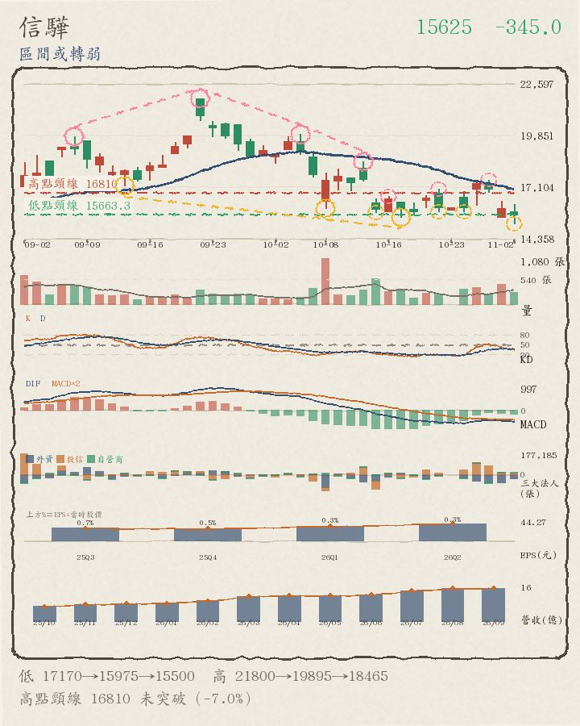
12:31 盤中 12350（+3.48%），比加權指數強 1.00 個百分點、跌破月線 15299.2，離高點頸線 19845 還差 37.8%，轉折還沒走出明顯方向。
- 月線位置：現價 12350 在月線 15299.2 之下（-19.3%）；5 日線 12336 也在月線之下（短均在下）；月線向下
- 量能：以已過交易時間推估，今天成交量約是 20 日均量的 1.39 倍（量增），比 20 日均量大不少；上漲又量增，量價配合
- 關鍵價位：已跌破前一個轉折低點；高點頸線 19845 還在現價上方 37.8%；前一交易日高點 11935（高於 3.5%）；今天盤中高點 12590（低於 1.9%）；今天盤中低點 11895（高於 3.8%）
- 轉折結構：低點 17170、15975、15500 與高點 19895、18465、17490 都沒有明顯遞增，屬於區間震盪或轉弱；還沒確認的轉折低點 10-27 15800、11-10 10710；還沒確認的轉折高點 10-29 17490、11-09 11990（圖上虛線小圈）
雙鴻 3324 上櫃
1290 +55.0（+4.45%）
區間或轉弱 盤中成交值 47.77 億・全榜第 39 名（上櫃第 10 名）・相對大盤 +1.97
好條件 1/7：攻擊量（量增＋上漲）
不好條件 3/7：跌破前低、在月線之下、月線下彎
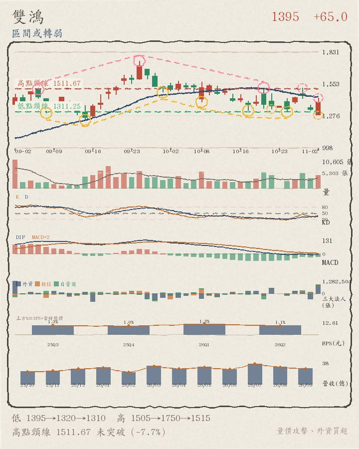
12:31 盤中 1290（+4.45%），比加權指數強 1.97 個百分點、跌破月線 1343，離高點頸線 1511.67 還差 14.7%，轉折還沒走出明顯方向。
- 月線位置：現價 1290 在月線 1343 之下（-4.0%）；5 日線 1182 也在月線之下（短均在下）；月線向下
- 量能：以已過交易時間推估，今天成交量約是 20 日均量的 1.22 倍（量增），比 20 日均量大不少；上漲又量增，量價配合
- 關鍵價位：已跌破前一個轉折低點；高點頸線 1511.67 還在現價上方 14.7%；前一交易日高點 1255（高於 2.8%）；今天盤中高點 1310（低於 1.5%）；今天盤中低點 1205（高於 7.1%）
- 轉折結構：低點 1395、1320、1310 與高點 1750、1515、1515 都沒有明顯遞增，屬於區間震盪或轉弱；還沒確認的轉折低點 11-02 1280、11-09 1050；還沒確認的轉折高點 11-03 1445、11-10 1255（圖上虛線小圈）
緯穎 6669 上市
1650 -30.0（-1.79%）
區間或轉弱 盤中成交值 46.23 億・全榜第 40 名（上市第 30 名）・相對大盤 -4.27
好條件 0/7：無
不好條件 6/7：跌破前低、今日下跌、相對大盤弱、在月線之下、貼近今日低點（1% 內）、月線下彎
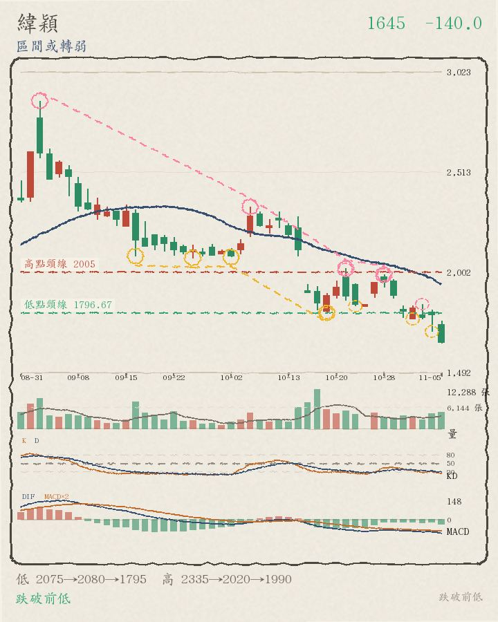
12:31 盤中 1650（-1.79%），比加權指數弱 4.27 個百分點、跌破月線 1846.5，離高點頸線 2005 還差 17.7%，轉折還沒走出明顯方向。
- 月線位置：現價 1650 在月線 1846.5 之下（-10.6%）；5 日線 1663 也在月線之下（短均在下）；月線向下
- 量能：以已過交易時間推估，今天成交量約是 20 日均量的 0.72 倍（量平），比 20 日均量少很多
- 關鍵價位：已跌破前一個轉折低點；高點頸線 2005 還在現價上方 17.7%；前一交易日高點 1730（低於 4.6%）；今天盤中高點 1710（低於 3.5%）；今天盤中低點 1640（高於 0.6%）
- 轉折結構：低點 2075、2080、1795 與高點 2335、2020、1990 都沒有明顯遞增，屬於區間震盪或轉弱；還沒確認的轉折低點 11-02 1765、11-06 1485；還沒確認的轉折高點 11-03 1840、11-10 1730（圖上虛線小圈）
群聯 8299 上櫃
1720 +45.0（+2.69%）
區間或轉弱 盤中成交值 43.64 億・全榜第 41 名（上櫃第 11 名）・相對大盤 +0.21
好條件 1/7：守住今日高檔（距今日高點 1% 內）
不好條件 3/7：跌破前低、在月線之下、月線下彎
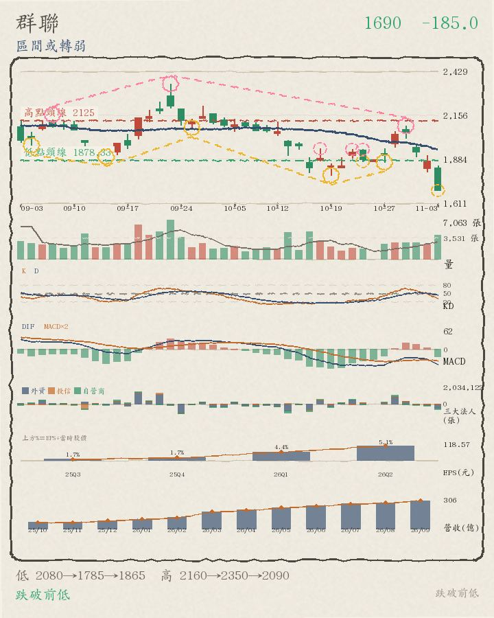
12:31 盤中 1720（+2.69%），比加權指數強 0.21 個百分點、跌破月線 1831，離高點頸線 2190 還差 21.5%，轉折還沒走出明顯方向。
- 月線位置：現價 1720 在月線 1831 之下（-6.1%）；5 日線 1619 也在月線之下（短均在下）；月線向下
- 量能：以已過交易時間推估，今天成交量約是 20 日均量的 1.08 倍（量平），比 20 日均量大一些
- 關鍵價位：已跌破前一個轉折低點；高點頸線 2190 還在現價上方 21.5%；前一交易日高點 1760（低於 2.3%）；今天盤中高點 1730（低於 0.6%）；今天盤中低點 1635（高於 5.2%）
- 轉折結構：低點 2080、1785、1865 與高點 2160、2350、2090 都沒有明顯遞增，屬於區間震盪或轉弱；還沒確認的轉折低點 11-06 1405、11-10 1630；還沒確認的轉折高點 10-29 2090、11-10 1760（圖上虛線小圈）
鴻海 2317 上市
240 -1.5（-0.62%）
區間或轉弱 盤中成交值 39.21 億・全榜第 42 名（上市第 31 名）・相對大盤 -3.10
好條件 0/7：無
不好條件 4/7：今日下跌、相對大盤弱、在月線之下、月線下彎

12:31 盤中 240（-0.62%），比加權指數弱 3.10 個百分點、跌破月線 242.825，離高點頸線 255.92 還差 6.2%，轉折還沒走出明顯方向。
- 月線位置：現價 240 在月線 242.825 之下（-1.2%）；5 日線 236 也在月線之下（短均在下）；月線向下
- 量能：以已過交易時間推估，今天成交量約是 20 日均量的 0.47 倍（量縮），比 20 日均量少很多
- 關鍵價位：高點頸線 255.92 還沒突破，差 6.2%；前一交易日高點 247.5（低於 3.0%）；今天盤中高點 242.5（低於 1.0%）；今天盤中低點 236（高於 1.7%）
- 轉折結構：低點 243.5、247、237 與高點 257、266.5、253.5 都沒有明顯遞增，屬於區間震盪或轉弱；還沒確認的轉折低點 10-30 240、11-06 212.5；還沒確認的轉折高點 11-02 252、11-10 247.5（圖上虛線小圈）
量縮
↑ 回上方清單
高力 8996 上市
1415 +10.0（+0.71%）
區間或轉弱 盤中成交值 37.74 億・全榜第 43 名（上市第 32 名）・相對大盤 -1.77
好條件 0/7：無
不好條件 4/7：跌破前低、相對大盤弱、在月線之下、月線下彎
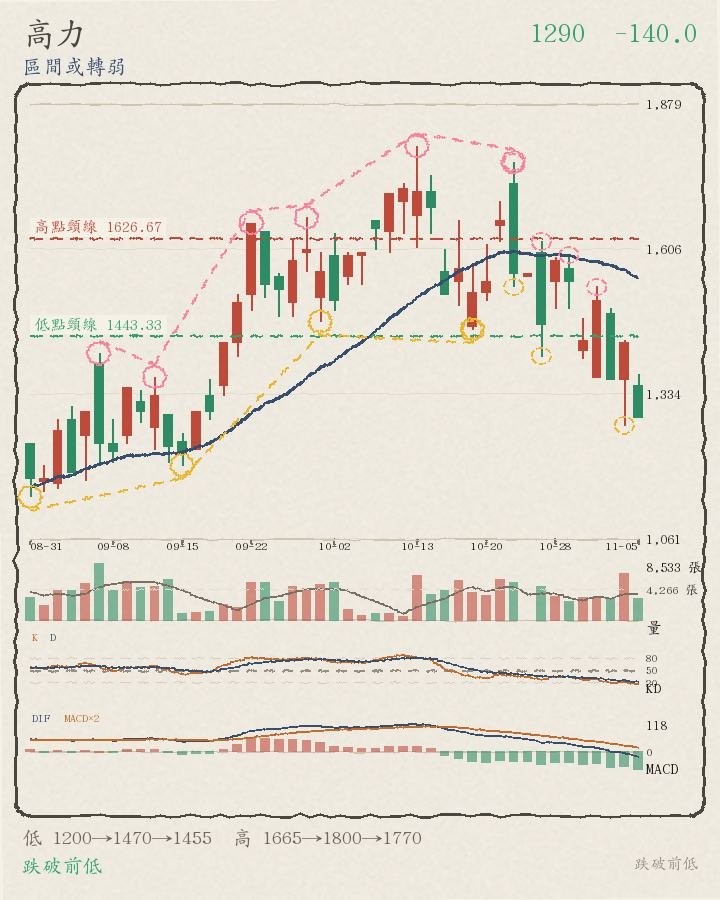
12:31 盤中 1415（+0.71%），比加權指數弱 1.77 個百分點、跌破月線 1491.25，離高點頸線 1607.5 還差 12.0%，轉折還沒走出明顯方向。
- 月線位置：現價 1415 在月線 1491.25 之下（-5.1%）；5 日線 1317 也在月線之下（短均在下）；月線向下
- 量能：以已過交易時間推估，今天成交量約是 20 日均量的 0.81 倍（量平），比 20 日均量少很多；上漲但量縮，量價背離
- 關鍵價位：已跌破前一個轉折低點；高點頸線 1607.5 還在現價上方 12.0%；前一交易日高點 1405（高於 0.7%）；今天盤中高點 1460（低於 3.1%）；今天盤中低點 1375（高於 2.9%）
- 轉折結構：低點 1200、1470、1455 與高點 1665、1800、1770 都沒有明顯遞增，屬於區間震盪或轉弱；還沒確認的轉折低點 11-04 1275、11-06 1165；還沒確認的轉折高點 11-02 1535、11-10 1405（圖上虛線小圈）
華通 2313 上市
190.5 +8.0（+4.38%）
上升趨勢（底底高＋頭頭高） 盤中成交值 36.3 億・全榜第 44 名（上市第 33 名）・相對大盤 +1.90
好條件 3/7：底底高、頭頭高、守住今日高檔（距今日高點 1% 內）
不好條件 3/7：跌破前低、在月線之下、月線下彎
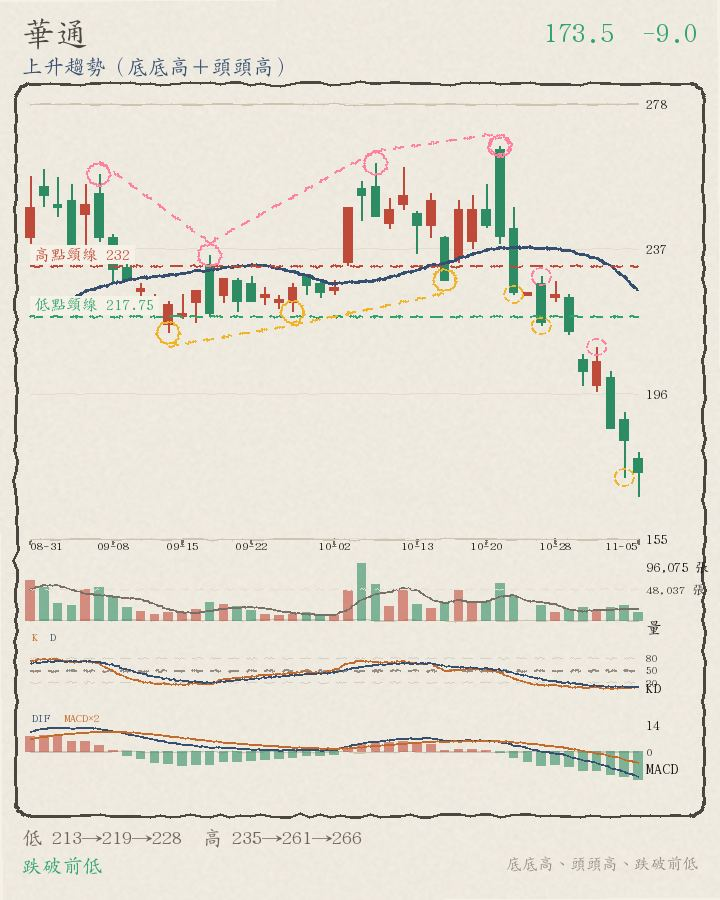
12:31 盤中 190.5（+4.38%），比加權指數強 1.90 個百分點、跌破月線 213.075，離高點頸線 232 還差 17.9%，轉折結構仍是底底高＋頭頭高。
- 月線位置：現價 190.5 在月線 213.075 之下（-10.6%）；5 日線 172.8 也在月線之下（短均在下）；月線向下
- 量能：以已過交易時間推估，今天成交量約是 20 日均量的 0.84 倍（量平），比 20 日均量少很多；上漲但量縮，量價背離
- 關鍵價位：已跌破前一個轉折低點；高點頸線 232 還在現價上方 17.9%；前一交易日高點 189（高於 0.8%）；今天盤中高點 192（低於 0.8%）；今天盤中低點 179.5（高於 6.1%）
- 轉折結構：低點 213、219、228 一路墊高、高點 235、261、266 也一路墊高，是底底高＋頭頭高；還沒確認的轉折低點 10-27 215、11-06 149；還沒確認的轉折高點 11-02 209、11-10 189（圖上虛線小圈）
頎邦 6147 上櫃
170.5 +1.0（+0.59%）
區間或轉弱 盤中成交值 35.85 億・全榜第 45 名（上櫃第 12 名）・相對大盤 -1.89
好條件 1/7：攻擊量（量增＋上漲）
不好條件 4/7：跌破前低、相對大盤弱、在月線之下、月線下彎
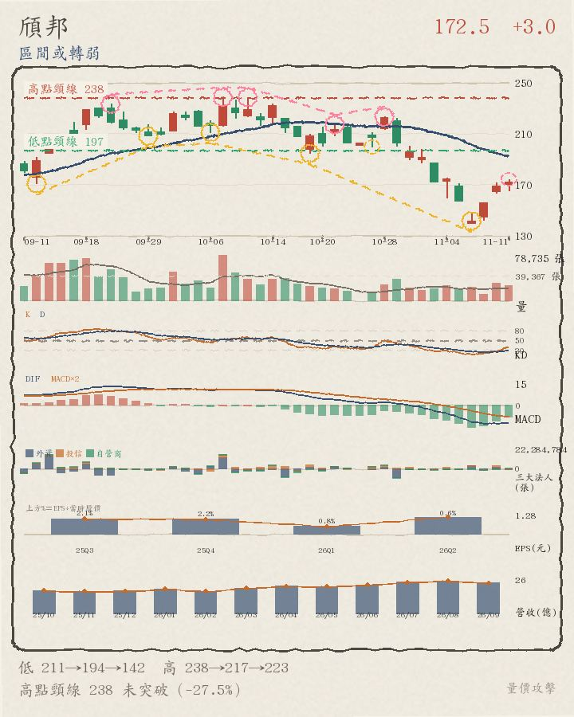
12:31 盤中 170.5（+0.59%），比加權指數弱 1.89 個百分點、跌破月線 194.875，離高點頸線 220 還差 22.5%，轉折還沒走出明顯方向。
- 月線位置：現價 170.5 在月線 194.875 之下（-12.5%）；5 日線 160 也在月線之下（短均在下）；月線向下
- 量能：以已過交易時間推估，今天成交量約是 20 日均量的 1.11 倍（量增），比 20 日均量大一些；上漲又量增，量價配合
- 關鍵價位：已跌破前一個轉折低點；高點頸線 220 還在現價上方 22.5%；前一交易日高點 171.5（低於 0.6%）；今天盤中高點 174.5（低於 2.3%）；今天盤中低點 165.5（高於 3.0%）
- 轉折結構：低點 208、211、194.5 與高點 238、217、223 都沒有明顯遞增，屬於區間震盪或轉弱；還沒確認的轉折低點 10-27 199.5、11-06 142；還沒確認的轉折高點 10-28 223、11-10 171.5（圖上虛線小圈）
富世達 6805 上市
2030 +40.0（+2.01%）
區間或轉弱 盤中成交值 34.73 億・全榜第 46 名（上市第 34 名）・相對大盤 -0.47
好條件 1/7：攻擊量（量增＋上漲）
不好條件 4/7：跌破前低、相對大盤弱、在月線之下、月線下彎

12:31 盤中 2030（+2.01%），比加權指數弱 0.47 個百分點、跌破月線 2199，離高點頸線 2505 還差 19.0%，轉折還沒走出明顯方向。
- 月線位置：現價 2030 在月線 2199 之下（-7.7%）；5 日線 1898 也在月線之下（短均在下）；月線向下
- 量能：以已過交易時間推估，今天成交量約是 20 日均量的 1.40 倍（量增），比 20 日均量大不少；上漲又量增，量價配合
- 關鍵價位：已跌破前一個轉折低點；高點頸線 2505 還在現價上方 19.0%；前一交易日高點 2040（低於 0.5%）；今天盤中高點 2080（低於 2.4%）；今天盤中低點 1935（高於 4.9%）
- 轉折結構：低點 2300、2065、2200 與高點 2510、2515、2490 都沒有明顯遞增，屬於區間震盪或轉弱；還沒確認的轉折低點 10-30 2225、11-09 1670；還沒確認的轉折高點 10-29 2490、11-10 2040（圖上虛線小圈）
藥華藥 6446 上市
1320 +40.0（+3.12%）
高點墊高、底部不穩 盤中成交值 34.31 億・全榜第 47 名（上市第 35 名）・相對大盤 +0.64
好條件 6/7：站上月線、月線向上、頭頭高、突破頸線、攻擊量（量增＋上漲）、守住今日高檔（距今日高點 1% 內）
不好條件 0/7：無
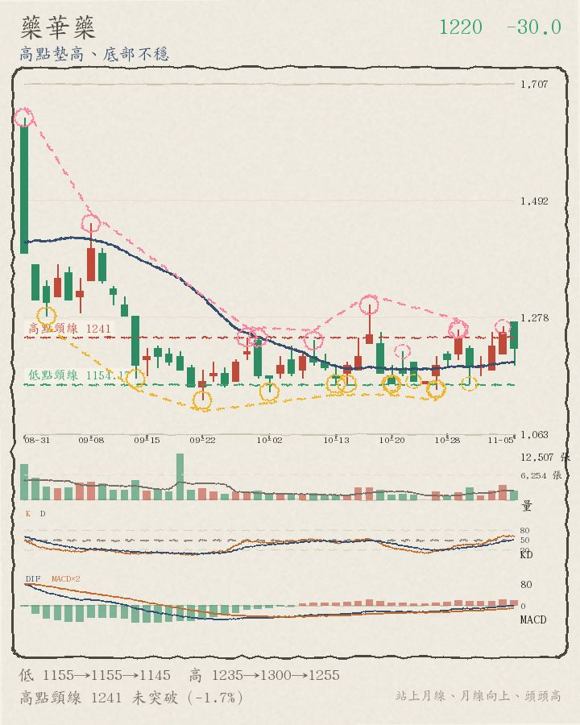
12:31 盤中 1320（+3.12%），比加權指數強 0.64 個百分點、站上月線 1211，已突破高點頸線 1242.5，高點還在墊高（但底部沒同步墊高）。
- 月線位置：現價 1320 在月線 1211 之上（+9.0%）；5 日線 1271 也在月線之上（短均在上）；月線向上
- 量能：以已過交易時間推估，今天成交量約是 20 日均量的 1.36 倍（量增），比 20 日均量大不少；上漲又量增，量價配合
- 關鍵價位：高點頸線 1242.5 已站上；前一交易日高點 1385（低於 4.7%）；今天盤中高點 1330（低於 0.8%）；今天盤中低點 1235（高於 6.9%）
- 轉折結構：高點 1235、1300、1255 墊高（頭頭高），但低點 1155、1155、1145 沒有同步墊高；還沒確認的轉折低點 11-06 1075、11-10 1275；還沒確認的轉折高點 10-29 1255、11-09 1390（圖上虛線小圈）
華經 2468 上市
67.9 +1.9（+2.88%）
上升趨勢（底底高＋頭頭高） 盤中成交值 33.64 億・全榜第 48 名（上市第 36 名）・相對大盤 +0.40
好條件 6/7：站上月線、月線向上、底底高、頭頭高、突破頸線、攻擊量（量增＋上漲）
不好條件 0/7：無
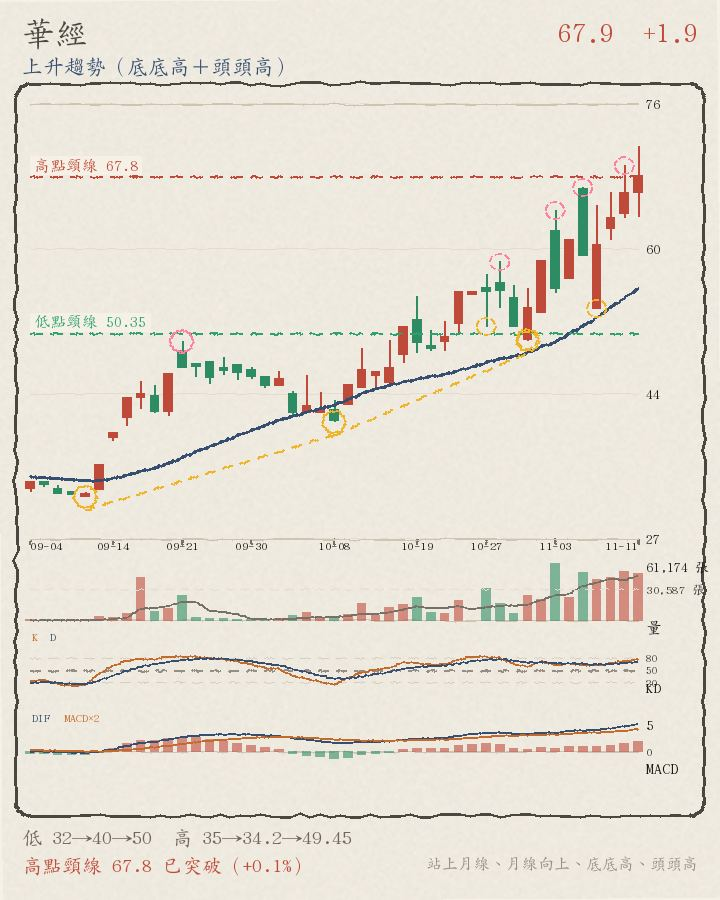
12:31 盤中 67.9（+2.88%），比加權指數強 0.40 個百分點、站上月線 54.282，已突破高點頸線 67.8，轉折結構仍是底底高＋頭頭高。
- 月線位置：現價 67.9 在月線 54.282 之上（+25.1%）；5 日線 61.86 也在月線之上（短均在上）；月線向上
- 量能：以已過交易時間推估，今天成交量約是 20 日均量的 2.67 倍（爆量），比 20 日均量大不少；上漲又量增，量價配合
- 關鍵價位：高點頸線 67.8 已站上；前一交易日高點 69（低於 1.6%）；今天盤中高點 71.2（低於 4.6%）；今天盤中低點 63.4（高於 7.1%）
- 轉折結構：低點 32.15、40.5、49.6 一路墊高、高點 35、34.2、49.45 也一路墊高，是底底高＋頭頭高；還沒確認的轉折低點 10-30 49.6、11-06 53.1；還沒確認的轉折高點 11-05 66.6、11-10 69（圖上虛線小圈）
愛普* 6531 上市
719 -11.0（-1.51%）
區間或轉弱 盤中成交值 33.46 億・全榜第 49 名（上市第 37 名）・相對大盤 -3.99
好條件 0/7：無
不好條件 6/7：跌破前低、今日下跌、相對大盤弱、在月線之下、貼近今日低點（1% 內）、月線下彎
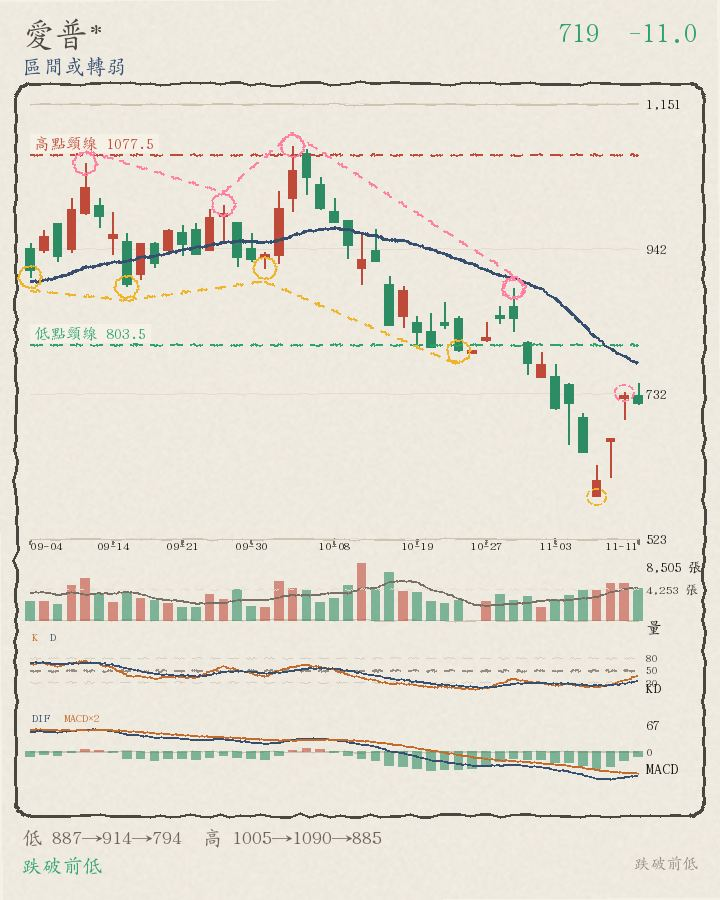
12:31 盤中 719（-1.51%），比加權指數弱 3.99 個百分點、跌破月線 786.9，離高點頸線 1077.5 還差 33.3%，轉折還沒走出明顯方向。
- 月線位置：現價 719 在月線 786.9 之下（-8.6%）；5 日線 674.6 也在月線之下（短均在下）；月線向下
- 量能：以已過交易時間推估，今天成交量約是 20 日均量的 1.46 倍（量增），比 20 日均量大不少；下跌卻量增，量價背離
- 關鍵價位：已跌破前一個轉折低點；高點頸線 1077.5 還在現價上方 33.3%；前一交易日高點 734（低於 2.0%）；今天盤中高點 747（低於 3.7%）；今天盤中低點 717（高於 0.3%）
- 轉折結構：低點 887、914、794 與高點 1005、1090、885 都沒有明顯遞增，屬於區間震盪或轉弱；還沒確認的轉折低點 11-06 584；還沒確認的轉折高點 10-29 885、11-10 734（圖上虛線小圈）
群創 3481 上市
39.95 +0.8（+1.91%）
區間或轉弱 盤中成交值 31.63 億・全榜第 50 名（上市第 38 名）・相對大盤 -0.57
好條件 0/7：無
不好條件 4/7：跌破前低、相對大盤弱、在月線之下、月線下彎

12:31 盤中 39.95（+1.91%），比加權指數弱 0.57 個百分點、跌破月線 44.8，離高點頸線 49.12 還差 18.7%，轉折還沒走出明顯方向。
- 月線位置：現價 39.95 在月線 44.8 之下（-10.8%）；5 日線 38.76 也在月線之下（短均在下）；月線向下
- 量能：以已過交易時間推估，今天成交量約是 20 日均量的 0.83 倍（量平），比 20 日均量少很多；上漲但量縮，量價背離
- 關鍵價位：已跌破前一個轉折低點；高點頸線 49.12 還在現價上方 18.7%；前一交易日高點 41.4（低於 3.5%）；今天盤中高點 40.4（低於 1.1%）；今天盤中低點 39（高於 2.4%）
- 轉折結構：低點 46.25、48.55、45.65 與高點 52.2、56.2、49.7 都沒有明顯遞增，屬於區間震盪或轉弱；還沒確認的轉折低點 10-27 46.25、11-06 34.2；還沒確認的轉折高點 11-02 45.35、11-10 41.4（圖上虛線小圈）
京元電子 2449 上市
229.5 +2.0（+0.88%）
區間或轉弱 盤中成交值 29.31 億・全榜第 51 名（上市第 39 名）・相對大盤 -1.60
好條件 1/7：守住今日高檔（距今日高點 1% 內）
不好條件 4/7：跌破前低、相對大盤弱、在月線之下、月線下彎

12:31 盤中 229.5（+0.88%），比加權指數弱 1.60 個百分點、跌破月線 259.025，離高點頸線 282.25 還差 18.7%，轉折還沒走出明顯方向。
- 月線位置：現價 229.5 在月線 259.025 之下（-11.4%）；5 日線 224 也在月線之下（短均在下）；月線向下
- 量能：以已過交易時間推估，今天成交量約是 20 日均量的 0.66 倍（量縮），比 20 日均量少很多；上漲但量縮，量價背離
- 關鍵價位：已跌破前一個轉折低點；高點頸線 282.25 還在現價上方 18.7%；前一交易日高點 230（低於 0.2%）；今天盤中高點 231（低於 0.6%）；今天盤中低點 222（高於 3.4%）
- 轉折結構：低點 253、284、255 與高點 330、310、284.5 都沒有明顯遞增，屬於區間震盪或轉弱；還沒確認的轉折低點 11-02 245.5、11-09 201；還沒確認的轉折高點 11-02 263、11-10 230（圖上虛線小圈）
貿聯-KY 3665 上市
1565 +35.0（+2.29%）
區間或轉弱 盤中成交值 28.83 億・全榜第 52 名（上市第 40 名）・相對大盤 -0.19
好條件 0/7：無
不好條件 4/7：跌破前低、相對大盤弱、在月線之下、月線下彎

12:31 盤中 1565（+2.29%），比加權指數弱 0.19 個百分點、跌破月線 1775.75，轉折還沒走出明顯方向。
- 月線位置：現價 1565 在月線 1775.75 之下（-11.9%）；5 日線 1463 也在月線之下（短均在下）；月線向下
- 量能：以已過交易時間推估，今天成交量約是 20 日均量的 0.79 倍（量平），比 20 日均量少很多；上漲但量縮，量價背離
- 關鍵價位：前一交易日高點 1550（高於 1.0%）；今天盤中高點 1595（低於 1.9%）；今天盤中低點 1490（高於 5.0%）
- 轉折結構：低點 2095、1930、1810 與高點 2375、2685、2080 都沒有明顯遞增，屬於區間震盪或轉弱；還沒確認的轉折低點 11-02 1555、11-09 1295；還沒確認的轉折高點 11-03 1675、11-10 1550（圖上虛線小圈）
川湖 2059 上市
8700 +135.0（+1.58%）
區間或轉弱 盤中成交值 28.8 億・全榜第 53 名（上市第 41 名）・相對大盤 -0.90
好條件 1/7：守住今日高檔（距今日高點 1% 內）
不好條件 4/7：跌破前低、相對大盤弱、在月線之下、月線下彎

12:31 盤中 8700（+1.58%），比加權指數弱 0.90 個百分點、跌破月線 9411.75，離高點頸線 10435 還差 16.6%，轉折還沒走出明顯方向。
- 月線位置：現價 8700 在月線 9411.75 之下（-7.6%）；5 日線 8147 也在月線之下（短均在下）；月線向下
- 量能：以已過交易時間推估，今天成交量約是 20 日均量的 0.67 倍（量縮），比 20 日均量少很多；上漲但量縮，量價背離
- 關鍵價位：已跌破前一個轉折低點；高點頸線 10435 還在現價上方 16.6%；前一交易日高點 8645（高於 0.6%）；今天盤中高點 8770（低於 0.8%）；今天盤中低點 8300（高於 4.8%）
- 轉折結構：低點 11665、11700、9500 與高點 13500、10580、10290 都沒有明顯遞增，屬於區間震盪或轉弱；還沒確認的轉折低點 10-27 9475、11-06 7200；還沒確認的轉折高點 11-03 9850、11-10 8645（圖上虛線小圈）
致茂 2360 上市
1360 +50.0（+3.82%）
區間或轉弱 盤中成交值 28.78 億・全榜第 54 名（上市第 42 名）・相對大盤 +1.34
好條件 0/7：無
不好條件 3/7：跌破前低、在月線之下、月線下彎
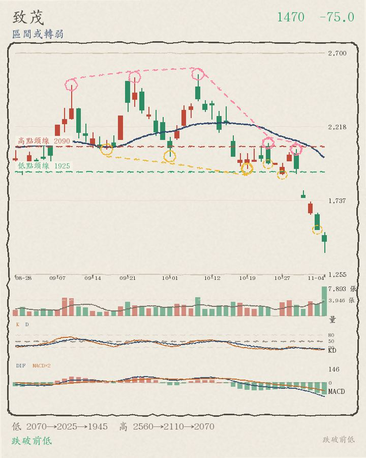
12:31 盤中 1360（+3.82%），比加權指數強 1.34 個百分點、跌破月線 1798.5，離高點頸線 2090 還差 34.9%，轉折還沒走出明顯方向。
- 月線位置：現價 1360 在月線 1798.5 之下（-24.4%）；5 日線 1314 也在月線之下（短均在下）；月線向下
- 量能：以已過交易時間推估，今天成交量約是 20 日均量的 0.84 倍（量平），比 20 日均量少很多；上漲但量縮，量價背離
- 關鍵價位：已跌破前一個轉折低點；高點頸線 2090 還在現價上方 34.9%；前一交易日高點 1375（低於 1.1%）；今天盤中高點 1395（低於 2.5%）；今天盤中低點 1310（高於 3.8%）
- 轉折結構：低點 2070、2025、1945 與高點 2560、2110、2070 都沒有明顯遞增，屬於區間震盪或轉弱；還沒確認的轉折低點 10-27 1905、11-09 1190；還沒確認的轉折高點 10-29 2070、11-10 1375（圖上虛線小圈）
友達 2409 上市
28.2 +0.5（+1.81%）
底部墊高、未過前高 盤中成交值 28.42 億・全榜第 55 名（上市第 43 名）・相對大盤 -0.67
好條件 2/7：底底高、守住今日高檔（距今日高點 1% 內）
不好條件 4/7：跌破前低、相對大盤弱、在月線之下、月線下彎
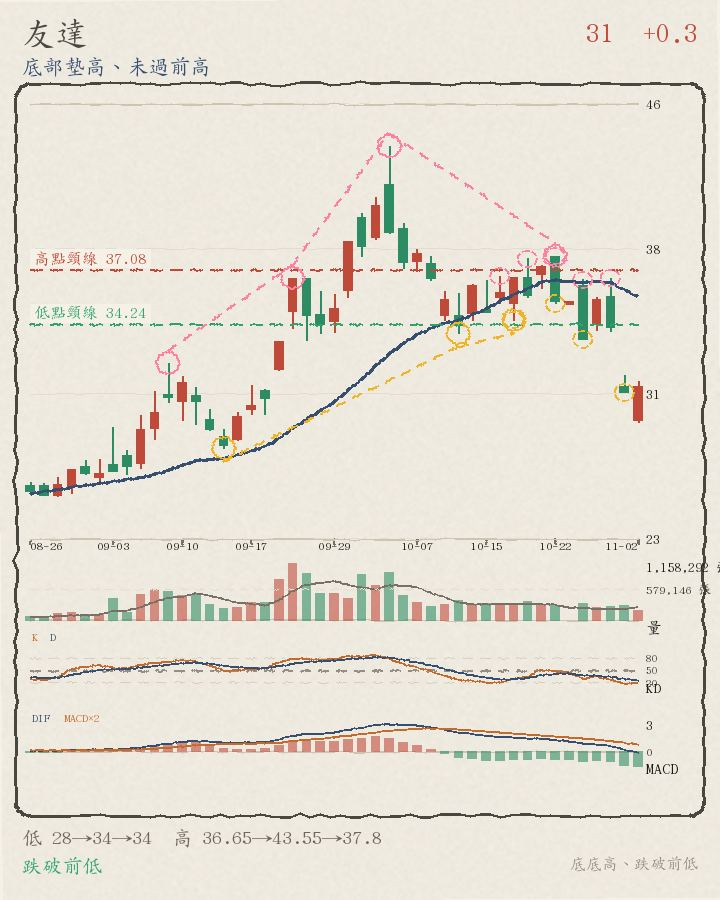
12:31 盤中 28.2（+1.81%），比加權指數弱 0.67 個百分點、跌破月線 32.688，離高點頸線 36.91 還差 23.6%，底部還在墊高（但高點沒同步創高）。
- 月線位置：現價 28.2 在月線 32.688 之下（-13.7%）；5 日線 27.76 也在月線之下（短均在下）；月線向下
- 量能：以已過交易時間推估，今天成交量約是 20 日均量的 0.45 倍（量縮），比 20 日均量少很多；上漲但量縮，量價背離
- 關鍵價位：已跌破前一個轉折低點；高點頸線 36.91 還在現價上方 23.6%；前一交易日高點 29.25（低於 3.6%）；今天盤中高點 28.4（低於 0.7%）；今天盤中低點 27.5（高於 2.5%）
- 轉折結構：低點 27.75、33.75、34.45 墊高（底底高），但高點 43.55、37.8、36.65 沒有同步創高；還沒確認的轉折低點 10-27 33.45、11-06 24.55；還沒確認的轉折高點 10-29 36.65、11-10 29.25（圖上虛線小圈）
尖點 8021 上市
389 +20.0（+5.42%）
區間或轉弱 盤中成交值 28.39 億・全榜第 56 名（上市第 44 名）・相對大盤 +2.94
好條件 2/7：攻擊量（量增＋上漲）、守住今日高檔（距今日高點 1% 內）
不好條件 3/7：跌破前低、在月線之下、月線下彎
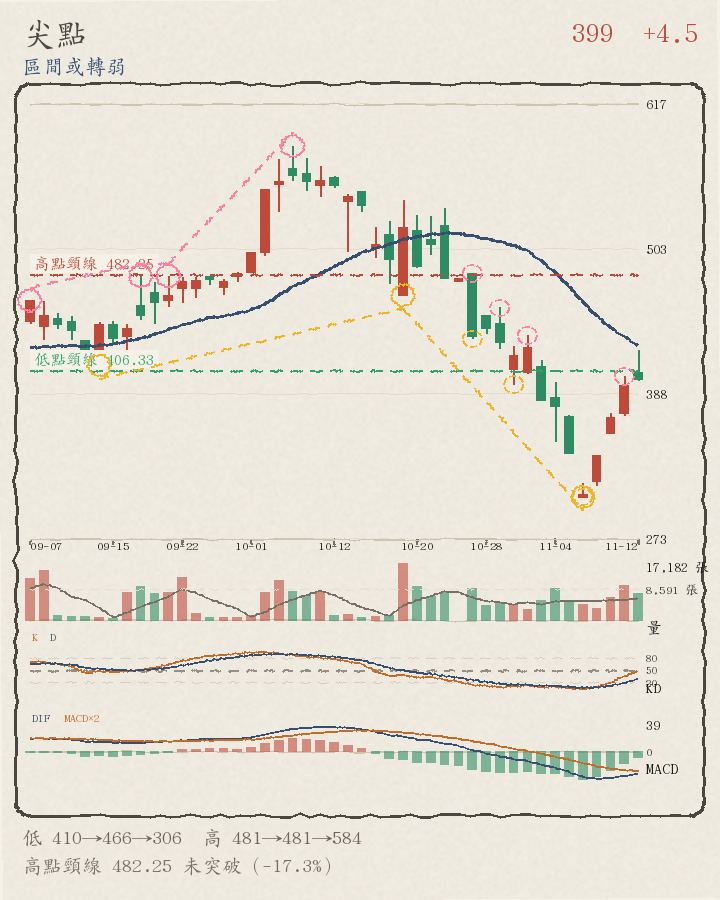
12:31 盤中 389（+5.42%），比加權指數強 2.94 個百分點、跌破月線 440.775，離高點頸線 482.25 還差 19.3%，轉折還沒走出明顯方向。
- 月線位置：現價 389 在月線 440.775 之下（-11.8%）；5 日線 347 也在月線之下（短均在下）；月線向下
- 量能：以已過交易時間推估，今天成交量約是 20 日均量的 1.68 倍（爆量），比 20 日均量大不少；上漲又量增，量價配合
- 關鍵價位：已跌破前一個轉折低點；高點頸線 482.25 還在現價上方 19.3%；前一交易日高點 372.5（高於 4.4%）；今天盤中高點 392.5（低於 0.9%）；今天盤中低點 370.5（高於 5.0%）
- 轉折結構：低點 413、410.5、466 與高點 481、481、584 都沒有明顯遞增，屬於區間震盪或轉弱；還沒確認的轉折低點 10-30 395.5、11-06 306.5；還沒確認的轉折高點 11-02 434、11-10 372.5（圖上虛線小圈）
華星光 4979 上櫃
385 +2.0（+0.52%）
區間或轉弱 盤中成交值 27.48 億・全榜第 57 名（上櫃第 13 名）・相對大盤 -1.96
好條件 1/7：攻擊量（量增＋上漲）
不好條件 4/7：跌破前低、相對大盤弱、在月線之下、月線下彎

12:31 盤中 385（+0.52%），比加權指數弱 1.96 個百分點、跌破月線 449.175，離高點頸線 654 還差 41.1%，轉折還沒走出明顯方向。
- 月線位置：現價 385 在月線 449.175 之下（-14.3%）；5 日線 354.2 也在月線之下（短均在下）；月線向下
- 量能：以已過交易時間推估，今天成交量約是 20 日均量的 1.72 倍（爆量），比 20 日均量大不少；上漲又量增，量價配合
- 關鍵價位：已跌破前一個轉折低點；高點頸線 654 還在現價上方 41.1%；前一交易日高點 383（高於 0.5%）；今天盤中高點 394.5（低於 2.4%）；今天盤中低點 370.5（高於 3.9%）
- 轉折結構：低點 501、545、445 與高點 622、588、531 都沒有明顯遞增，屬於區間震盪或轉弱；還沒確認的轉折低點 10-27 450、11-06 312；還沒確認的轉折高點 10-29 531、11-10 383（圖上虛線小圈）
鴻勁 7769 上市
4275 +55.0（+1.30%）
區間或轉弱 盤中成交值 27.23 億・全榜第 58 名（上市第 45 名）・相對大盤 -1.18
好條件 0/7：無
不好條件 4/7：跌破前低、相對大盤弱、在月線之下、月線下彎
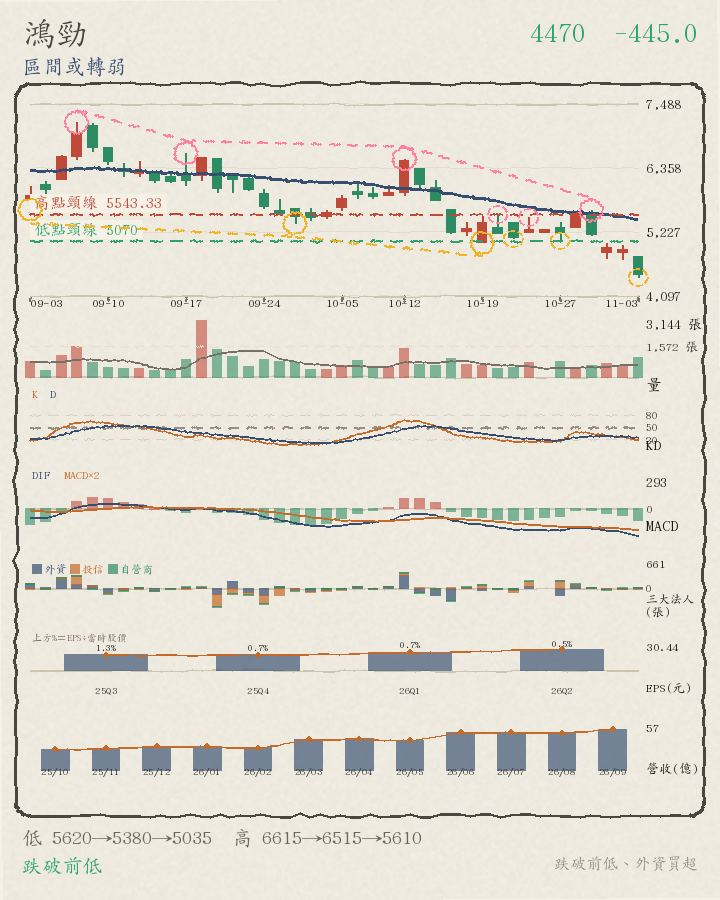
12:31 盤中 4275（+1.30%），比加權指數弱 1.18 個百分點、跌破月線 4961.25，離高點頸線 6556.67 還差 34.8%，轉折還沒走出明顯方向。
- 月線位置：現價 4275 在月線 4961.25 之下（-13.8%）；5 日線 4056 也在月線之下（短均在下）；月線向下
- 量能：以已過交易時間推估，今天成交量約是 20 日均量的 0.96 倍（量平），跟 20 日均量差不多
- 關鍵價位：已跌破前一個轉折低點；高點頸線 6556.67 還在現價上方 34.8%；前一交易日高點 4345（低於 1.6%）；今天盤中高點 4365（低於 2.1%）；今天盤中低點 4110（高於 4.0%）
- 轉折結構：低點 5620、5380、5035 與高點 6615、6515、5610 都沒有明顯遞增，屬於區間震盪或轉弱；還沒確認的轉折低點 10-27 5070、11-06 3585；還沒確認的轉折高點 10-29 5610、11-10 4345（圖上虛線小圈）
台郡 6269 上市
78.1 -0.5（-0.64%）
區間或轉弱 盤中成交值 26.5 億・全榜第 59 名（上市第 46 名）・相對大盤 -3.12
好條件 3/7：站上月線、月線向上、突破頸線
不好條件 2/7：今日下跌、相對大盤弱
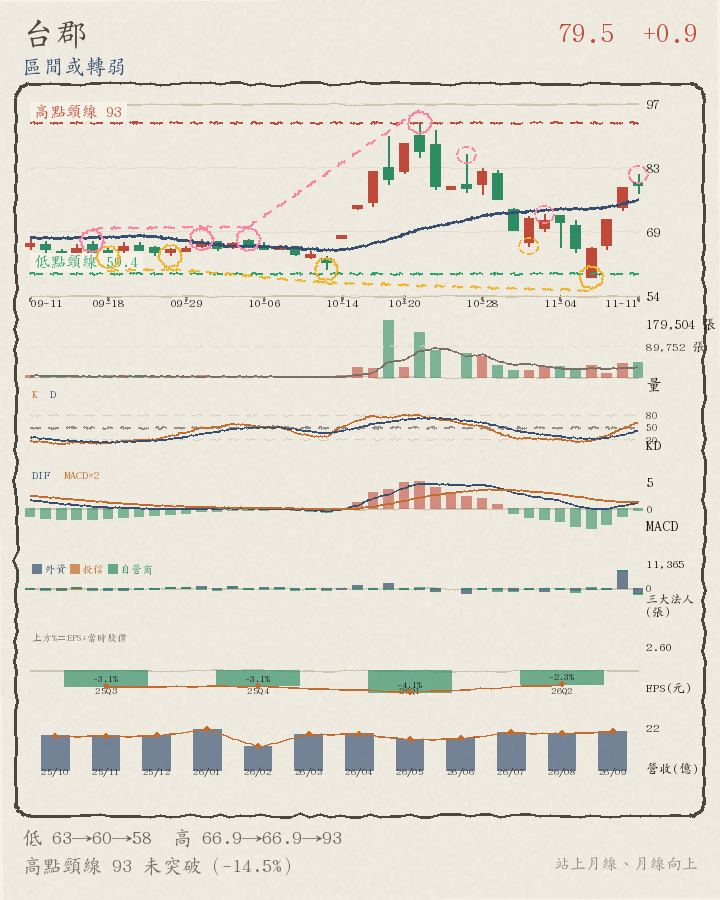
12:31 盤中 78.1（-0.64%），比加權指數弱 3.12 個百分點、站上月線 74.895，已突破高點頸線 66.9，轉折還沒走出明顯方向。
- 月線位置：現價 78.1 在月線 74.895 之上（+4.3%）；5 日線 70.14 也在月線之下（短均在下）；月線向上
- 量能：以已過交易時間推估，今天成交量約是 20 日均量的 0.97 倍（量平），跟 20 日均量差不多
- 關鍵價位：高點頸線 66.9 已站上；前一交易日高點 78.6（低於 0.6%）；今天盤中高點 81.4（低於 4.1%）；今天盤中低點 77.3（高於 1.0%）
- 轉折結構：低點 63、63.3、60.3 與高點 66.9、66.9、93 都沒有明顯遞增，屬於區間震盪或轉弱；還沒確認的轉折低點 11-02 65.5、11-06 58.5；還沒確認的轉折高點 11-03 72.5、11-10 78.6（圖上虛線小圈）
聯茂 6213 上市
580 +52.0（+9.85%）
高點墊高、底部不穩 盤中成交值 26.22 億・全榜第 60 名（上市第 47 名）・相對大盤 +7.37
好條件 1/7：頭頭高
不好條件 3/7：跌破前低、在月線之下、月線下彎

12:31 盤中 580（+9.85%），比加權指數強 7.37 個百分點、跌破月線 702.35，離高點頸線 865.67 還差 33.0%，高點還在墊高（但底部沒同步墊高）。
- 月線位置：現價 580 在月線 702.35 之下（-17.4%）；5 日線 543.6 也在月線之下（短均在下）；月線向下
- 量能：以已過交易時間推估，今天成交量約是 20 日均量的 0.37 倍（量縮），比 20 日均量少很多；上漲但量縮，量價背離
- 關鍵價位：已跌破前一個轉折低點；高點頸線 865.67 還在現價上方 33.0%；前一交易日高點 584（低於 0.7%）；今天盤中高點 580（高於 0.0%）；今天盤中低點 538（高於 7.8%）
- 轉折結構：高點 555、858、885 墊高（頭頭高），但低點 482、731、721 沒有同步墊高；還沒確認的轉折低點 10-27 737、11-09 481.5；還沒確認的轉折高點 10-29 815、11-10 584（圖上虛線小圈）
緯創 3231 上市
173.5 +2.5（+1.46%）
高點墊高、底部不穩 盤中成交值 25.98 億・全榜第 61 名（上市第 48 名）・相對大盤 -1.02
好條件 2/7：頭頭高、守住今日高檔（距今日高點 1% 內）
不好條件 3/7：相對大盤弱、在月線之下、月線下彎
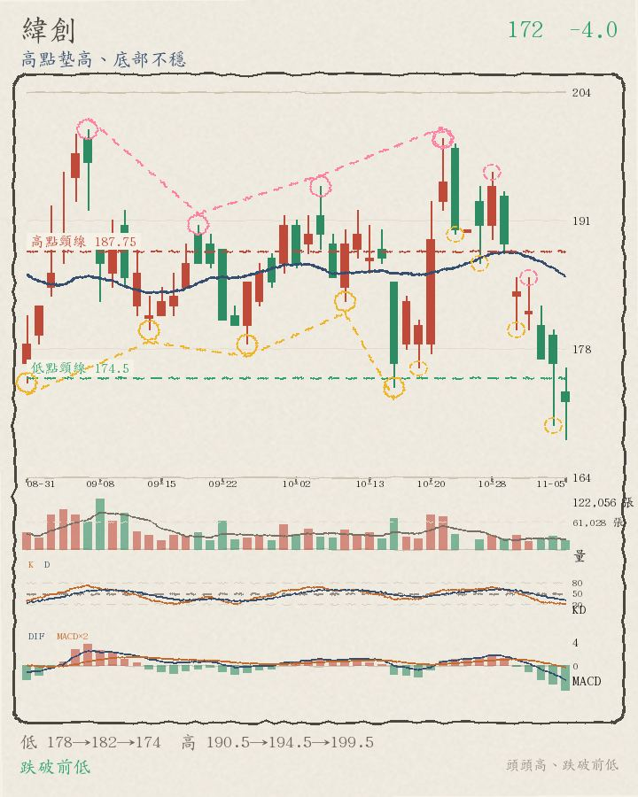
12:31 盤中 173.5（+1.46%），比加權指數弱 1.02 個百分點、跌破月線 181.775，離高點頸線 195.12 還差 11.1%，高點還在墊高（但底部沒同步墊高）。
- 月線位置：現價 173.5 在月線 181.775 之下（-4.5%）；5 日線 168.8 也在月線之下（短均在下）；月線向下
- 量能：以已過交易時間推估，今天成交量約是 20 日均量的 0.50 倍（量縮），比 20 日均量少很多；上漲但量縮，量價背離
- 關鍵價位：高點頸線 195.12 還沒突破，差 11.1%；前一交易日高點 173.5（高於 0.0%）；今天盤中高點 174（低於 0.3%）；今天盤中低點 168（高於 3.3%）
- 轉折結構：高點 190.5、194.5、199.5 墊高（頭頭高），但低點 178、182.5、173.5 沒有同步墊高；還沒確認的轉折低點 10-30 179.5、11-06 152；還沒確認的轉折高點 11-02 185、11-09 174.5（圖上虛線小圈）
精測 6510 上櫃
3050 +265.0（+9.52%）
區間或轉弱 盤中成交值 25.96 億・全榜第 62 名（上櫃第 14 名）・相對大盤 +7.04
好條件 3/7：站上月線、攻擊量（量增＋上漲）、守住今日高檔（距今日高點 1% 內）
不好條件 1/7：月線下彎
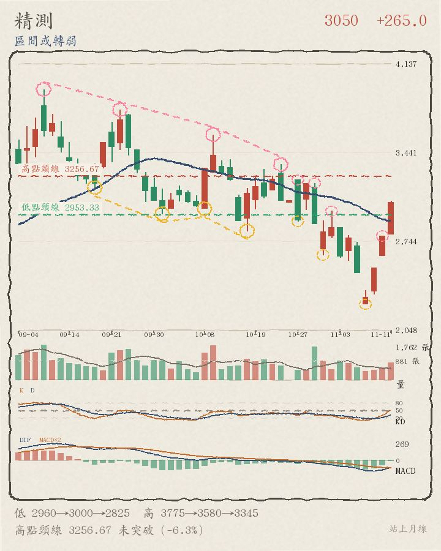
12:31 盤中 3050（+9.52%），比加權指數強 7.04 個百分點、站上月線 2916.5，離高點頸線 3256.67 還差 6.3%，轉折還沒走出明顯方向。
- 月線位置：現價 3050 在月線 2916.5 之上（+4.6%）；5 日線 2578 也在月線之下（短均在下）；月線向下
- 量能：以已過交易時間推估，今天成交量約是 20 日均量的 1.35 倍（量增），比 20 日均量大不少；上漲又量增，量價配合
- 關鍵價位：高點頸線 3256.67 還沒突破，差 6.3%；前一交易日高點 2785（高於 9.5%）；今天盤中高點 3060（低於 0.3%）；今天盤中低點 2800（高於 8.9%）
- 轉折結構：低點 2960、3000、2825 與高點 3775、3580、3345 都沒有明顯遞增，屬於區間震盪或轉弱；還沒確認的轉折低點 10-30 2635、11-06 2250；還沒確認的轉折高點 11-02 2980、11-10 2785（圖上虛線小圈）
金山電 8042 上櫃
129.5 +2.5（+1.97%）
區間或轉弱 盤中成交值 25.75 億・全榜第 63 名（上櫃第 15 名）・相對大盤 -0.51
好條件 2/7：月線向上、攻擊量（量增＋上漲）
不好條件 2/7：相對大盤弱、在月線之下
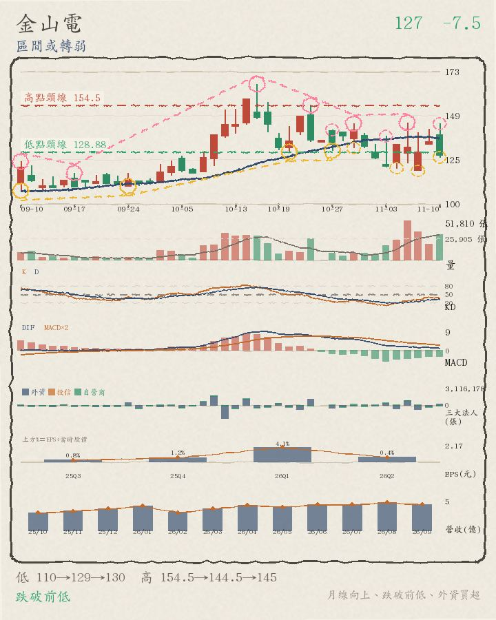
12:31 盤中 129.5（+1.97%），比加權指數弱 0.51 個百分點、跌破月線 136.225，離高點頸線 142.5 還差 9.1%，轉折還沒走出明顯方向。
- 月線位置：現價 129.5 在月線 136.225 之下（-4.9%）；5 日線 131 也在月線之下（短均在下）；月線向上
- 量能：以已過交易時間推估，今天成交量約是 20 日均量的 1.21 倍（量增），比 20 日均量大不少；上漲又量增，量價配合
- 關鍵價位：高點頸線 142.5 還沒突破，差 9.1%；前一交易日高點 144.5（低於 10.4%）；今天盤中高點 136（低於 4.8%）；今天盤中低點 125.5（高於 3.2%）
- 轉折結構：低點 110、129、129.5 與高點 154.5、144.5、145 都沒有明顯遞增，屬於區間震盪或轉弱；還沒確認的轉折低點 11-06 118.5、11-10 126；還沒確認的轉折高點 11-05 145、11-10 144.5（圖上虛線小圈）
東台 4526 上市
55.8 -3.8（-6.38%）
上升趨勢（底底高＋頭頭高） 盤中成交值 25.51 億・全榜第 64 名（上市第 49 名）・相對大盤 -8.86
好條件 4/7：站上月線、月線向上、底底高、頭頭高
不好條件 3/7：今日下跌、相對大盤弱、跌破昨日低點

12:31 盤中 55.8（-6.38%），比加權指數弱 8.86 個百分點、站上月線 45.82，離高點頸線 60.3 還差 7.5%，轉折結構仍是底底高＋頭頭高。
- 月線位置：現價 55.8 在月線 45.82 之上（+21.8%）；5 日線 55.59 也在月線之上（短均在上）；月線向上
- 量能：以已過交易時間推估，今天成交量約是 20 日均量的 2.70 倍（爆量），比 20 日均量大不少；下跌卻量增，量價背離
- 關鍵價位：高點頸線 60.3 還沒突破，差 7.5%；前一交易日高點 59.6（低於 6.4%）；今天盤中高點 64.5（低於 13.5%）；今天盤中低點 54.7（高於 2.0%）
- 轉折結構：低點 29.7、31.05、31.8 一路墊高、高點 33.05、36.9、61 也一路墊高，是底底高＋頭頭高；還沒確認的轉折低點 11-03 49.95、11-06 49.05；還沒確認的轉折高點 11-04 60.3、11-10 59.6（圖上虛線小圈）
昇達科 3491 上櫃
1435 +130.0（+9.96%）
區間或轉弱 盤中成交值 25.23 億・全榜第 65 名（上櫃第 16 名）・相對大盤 +7.48
好條件 3/7：站上月線、突破頸線、攻擊量（量增＋上漲）
不好條件 1/7：月線下彎
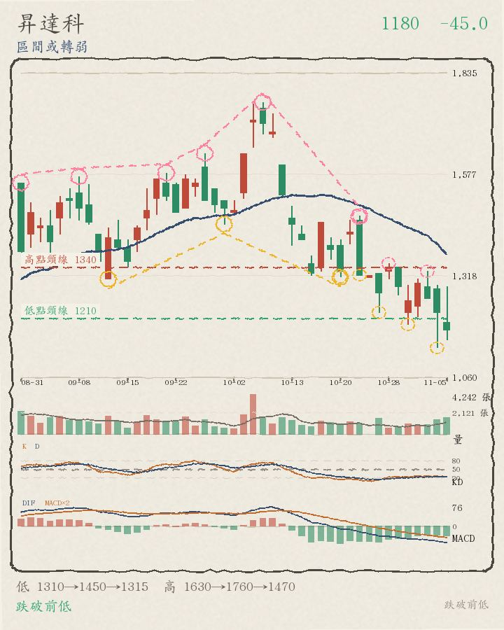
12:31 盤中 1435（+9.96%），比加權指數強 7.48 個百分點、站上月線 1306.5，已突破高點頸線 1328.33，轉折還沒走出明顯方向。
- 月線位置：現價 1435 在月線 1306.5 之上（+9.8%）；5 日線 1197 也在月線之下（短均在下）；月線向下
- 量能：以已過交易時間推估，今天成交量約是 20 日均量的 1.92 倍（爆量），比 20 日均量大不少；上漲又量增，量價配合
- 關鍵價位：高點頸線 1328.33 已站上；前一交易日高點 1305（高於 10.0%）；今天盤中高點 1435（高於 0.0%）；今天盤中低點 1325（高於 8.3%）
- 轉折結構：低點 1310、1450、1315 與高點 1630、1760、1470 都沒有明顯遞增，屬於區間震盪或轉弱；還沒確認的轉折低點 11-04 1135、11-06 1065；還沒確認的轉折高點 11-03 1330、11-10 1305（圖上虛線小圈）
旺宏 2337 上市
80.9 -1.2（-1.46%）
區間或轉弱 盤中成交值 24.75 億・全榜第 66 名（上市第 50 名）・相對大盤 -3.94
好條件 1/7：守住今日高檔（距今日高點 1% 內）
不好條件 6/7：跌破前低、今日下跌、相對大盤弱、在月線之下、跌破昨日低點、月線下彎

12:31 盤中 80.9（-1.46%），比加權指數弱 3.94 個百分點、跌破月線 96.325，離高點頸線 123.75 還差 34.6%，轉折還沒走出明顯方向。
- 月線位置：現價 80.9 在月線 96.325 之下（-16.0%）；5 日線 81.62 也在月線之下（短均在下）；月線向下
- 量能：以已過交易時間推估，今天成交量約是 20 日均量的 0.96 倍（量平），跟 20 日均量差不多
- 關鍵價位：已跌破前一個轉折低點；高點頸線 123.75 還在現價上方 34.6%；前一交易日高點 88.2（低於 8.3%）；今天盤中高點 81.2（低於 0.4%）；今天盤中低點 78.6（高於 2.9%）
- 轉折結構：低點 114、114.5、99.2 與高點 124.5、123、107.5 都沒有明顯遞增，屬於區間震盪或轉弱；還沒確認的轉折低點 10-30 93.2、11-06 71.8；還沒確認的轉折高點 10-28 107.5、11-10 88.2（圖上虛線小圈）
信昌電 6173 上櫃
216 +8.0（+3.85%）
區間或轉弱 盤中成交值 24.35 億・全榜第 67 名（上櫃第 17 名）・相對大盤 +1.37
好條件 1/7：攻擊量（量增＋上漲）
不好條件 3/7：跌破前低、在月線之下、月線下彎

12:31 盤中 216（+3.85%），比加權指數強 1.37 個百分點、跌破月線 264.176，離高點頸線 307.53 還差 29.8%，轉折還沒走出明顯方向。
- 月線位置：現價 216 在月線 264.176 之下（-18.2%）；5 日線 209.2 也在月線之下（短均在下）；月線向下
- 量能：以已過交易時間推估，今天成交量約是 20 日均量的 1.34 倍（量增），比 20 日均量大不少；上漲又量增，量價配合
- 關鍵價位：已跌破前一個轉折低點；高點頸線 307.53 還在現價上方 29.8%；前一交易日高點 219.5（低於 1.6%）；今天盤中高點 228.5（低於 5.5%）；今天盤中低點 210.5（高於 2.6%）
- 轉折結構：低點 302.128、302.128、248 與高點 302.128、302.128、312.5 都沒有明顯遞增，屬於區間震盪或轉弱；還沒確認的轉折低點 10-27 274.5、11-06 190.5；還沒確認的轉折高點 11-03 266.5、11-10 219.5（圖上虛線小圈）
聯一光 3441 上櫃
176 +1.0（+0.57%）
上升趨勢（底底高＋頭頭高） 盤中成交值 21.75 億・全榜第 68 名（上櫃第 18 名）・相對大盤 -1.91
好條件 3/7：底底高、頭頭高、攻擊量（量增＋上漲）
不好條件 4/7：跌破前低、相對大盤弱、在月線之下、月線下彎

12:31 盤中 176（+0.57%），比加權指數弱 1.91 個百分點、跌破月線 200.5，轉折結構仍是底底高＋頭頭高。
- 月線位置：現價 176 在月線 200.5 之下（-12.2%）；5 日線 157.9 也在月線之下（短均在下）；月線向下
- 量能：以已過交易時間推估，今天成交量約是 20 日均量的 2.84 倍（爆量），比 20 日均量大不少；上漲又量增，量價配合
- 關鍵價位：前一交易日高點 175（高於 0.6%）；今天盤中高點 188.5（低於 6.6%）；今天盤中低點 171.5（高於 2.6%）
- 轉折結構：低點 123.5、172.5、213.5 一路墊高、高點 201、280.5、293.5 也一路墊高，是底底高＋頭頭高；還沒確認的轉折低點 10-30 172、11-06 132.5；還沒確認的轉折高點 10-27 224、11-10 175（圖上虛線小圈）
萬潤 6187 上櫃
1000 -25.0（-2.44%）
區間或轉弱 盤中成交值 21.58 億・全榜第 69 名（上櫃第 19 名）・相對大盤 -4.92
好條件 0/7：無
不好條件 5/7：跌破前低、今日下跌、相對大盤弱、在月線之下、月線下彎

12:31 盤中 1000（-2.44%），比加權指數弱 4.92 個百分點、跌破月線 1236.65，轉折還沒走出明顯方向。
- 月線位置：現價 1000 在月線 1236.65 之下（-19.1%）；5 日線 972.6 也在月線之下（短均在下）；月線向下
- 量能：以已過交易時間推估，今天成交量約是 20 日均量的 1.09 倍（量平），比 20 日均量大一些
- 關鍵價位：前一交易日高點 1045（低於 4.3%）；今天盤中高點 1050（低於 4.8%）；今天盤中低點 988（高於 1.2%）
- 轉折結構：低點 1185、1180、1180 與高點 1270、1680、1360 都沒有明顯遞增，屬於區間震盪或轉弱；還沒確認的轉折低點 10-30 1135、11-06 864；還沒確認的轉折高點 11-02 1210、11-10 1045（圖上虛線小圈）
營邦 3693 上櫃
682 +62.0（+10.00%）
高點墊高、底部不穩 盤中成交值 19.86 億・全榜第 70 名（上櫃第 20 名）・相對大盤 +7.52
好條件 4/7：站上月線、頭頭高、突破頸線、攻擊量（量增＋上漲）
不好條件 1/7：月線下彎
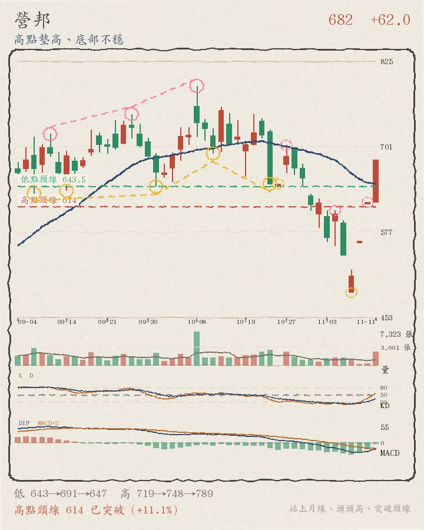
12:31 盤中 682（+10.00%），比加權指數強 7.52 個百分點、站上月線 648.55，已突破高點頸線 614，高點還在墊高（但底部沒同步墊高）。
- 月線位置：現價 682 在月線 648.55 之上（+5.2%）；5 日線 568.6 也在月線之下（短均在下）；月線向下
- 量能：以已過交易時間推估，今天成交量約是 20 日均量的 2.18 倍（爆量），比 20 日均量大不少；上漲又量增，量價配合
- 關鍵價位：高點頸線 614 已站上；前一交易日高點 620（高於 10.0%）；今天盤中高點 682（高於 0.0%）；今天盤中低點 620（高於 10.0%）
- 轉折結構：高點 719、748、789 墊高（頭頭高），但低點 643、691、647 沒有同步墊高；還沒確認的轉折低點 10-23 647、11-06 489；還沒確認的轉折高點 11-04 608、11-10 620（圖上虛線小圈）